”When you look at the … atmosphere on the limb of the Earth,
I wouldn’t say it looks unhealthy, but it definitely looks very,
very fragile and just kind of like this thin film,
so it looks like something that we definitely need to take care of.“
Scott Kelly, NASA.
11. פגיעה באטמוספרה וזיהום אוויר#
זיהום האטמוספרה מהווה את אחד הנושאים הסביבתיים המטרידים ביותר בגלל ההשלכות הבריאותיות והאקלימיות שלו. בפרק זה נתמקד בהרכב ובתנועת אוויר באטמוספרה (11.1), בסוגי מזהמים שונים באטמוספרה ובמקורותיהם (חלקיקים מרחפים, גזים מזהמים) (11.2). נתאר את זמן השהות, ומגמות בריכוזים של מזהמים אטמוספריים (11.3), נתאר שילוב של מספר מזהמים ויצירת משקעים חומציים ו-SMOG (11.4), ובקצרה נסקור זיהום תוך-ביתי (11.5). נראה כי לזיהום אוויר יש השפעה על בריאות הציבור וזיהום אוויר מהווה מקור לחולי ולמוות (11.6). נפרט את ההשפעה של מזהמי אוויר על האקלים באמצעות שינויים במעברי הקרינה באטמוספרה (העברת, החזרת, פיזור קרינה) (11.7). נדגים שמזהמי האטמוספרה אינם מכירים בגבולות של מדינות מה שיוצר זיהום אוויר חוצה גבולות (11.8). נסיים את החלק על זיהום האטמוספרה התחתונה (טרופוספרה) בסקירת שיטות דיגום וניטור של מזהמי אוויר (11.9). לאחר מכן נתמקד בפגיעה באוזון (\(O_{3}\)) הסטרטוספרי ובאמצעות הסקירה הזאת נטפל בתהליכים מושרי-אור באטמוספרה וביצירת מזהמים שניוניים (ראו הגדרה בהמשך) (11.10).
הרכב, תכונות ותנועת האוויר באטמוספרה#
האטמוספרה של כדור הארץ מכילה ארבעה סוגי גז עיקריים: חנקן (\(N_2\) 78%~), חמצן (\(O_2\) 21%~), ארגון (0.9%~ Ar) ופחמן דו חמצני - פד“ח (\(CO_2\) 0.04%~). גזים נוספים נמצאים בריכוזים נמוכים הרבה יותר, והם כוללים אדי מים[1] תחמוצות גופרית ( \(SO_2\), \(SO_3\)), תחמוצות חנקן (NO, \(NO_2\), \(N_2O\)), מתאן (\(CH_4\)), ועוד. בנוסף, האטמוספרה מכילה טיפות מים, גבישי קרח וחלקיקים מרחפים (אירוסולים או אווירוסולים – PM, particulate matter). לעיתים חלק מהמרכיבים הללו מגיבים אחד עם השני, כאשר חלק מהתגובות מחייבות אור שמש כמקור אנרגיה (תהליך מושרה אור – פוטוכימי) וחלקן מתרחשות גם בחושך. חקר האטמוספרה הוא תחום מרכזי בחקר כדור הארץ ובמאות השנים האחרונות רבים עסקו בניסיון לקבוע את הרכב האטמוספרה, את השינויים החלים בה כתלות בגובה (איור 11.1), את תנועת האוויר במרחב, והשוו בין מאפייני אטמוספרה באזורים שונים, למשל אטמוספרה ימית לעומת יבשתית. כפי שמוצג באיור 11.1 האטמוספרה עשויה משכבות בעובי של מספר עשרות ק“מ הנבדלות בפרופיל הטמפרטורה עם הגובה וכן בירידה רציפה בצפיפות האוויר. השכבה התחתונה של האטמוספרה נקראת טרופוספרה. עובייה הוא כ-9 ק“מ באזור הקטבים וכ-17 ק“מ באזור קוו המשווה. היא מכילה כ-90% מכלל המסה של האטמוספרה, והיא מאופיינת בירידה בטמפרטורה עם העלייה בגובה, מה שגורם לה להיות בלתי יציבה באופן מובנה (אוויר חם נוטה לעלות למעלה ואוויר קר לרדת למטה). זאת השכבה בה נדון במרבית הפרק הנוכחי. השכבה שמעליה היא הסטרטוספרה שבה הטמפרטורה עולה עם הגובה, ולכן היא יציבה מבחינת זרימות אוויר אנכיות. מעל הסטרטוספרה ישנן שכבות נוספות, אולם לא נדון בהן בפרק הנוכחי.
במשך מאות שנים בני אדם תעדו וחקרו את תנועת האוויר בקני מידה שונים, החל מתנועת אוויר בסקלה עולמית (רוחות גלובליות – איור 11.2), דרך רוחות אזוריות, וכלה במשטרי רוחות מקומיים. במקביל, נעשו ניסיונות להבין את התהליכים המשפיעים על תנועות אלה, והתברר ששינויים מרחביים בשטף של קרינת השמש (אנרגיה ליחידת זמן ליחידת שטח) ובטמפרטורה של פני השטח של כדור הארץ הגורמים לשינויים בלחץ האוויר במשולב עם תנועת כדור הארץ על צירו הם הקובעים העיקריים של כיווני הרוחות ועוצמתן באטמוספרה התחתונה (טרופוספרה). בסקלה העולמית גורמים אלה אחראיים למערכת הרוחות הגלובלית המורכבת משלושה תאי זרימה.[2] תאים אלה (Hadley, Ferrel, and Polar cells – איור 11.2) הם האחראיים ליצירת מערכת הרוחות העולמיות המופיעה באיור 11.2 (רוחות הסחר (Trade winds),[3] הרוחות המערביות (Westerlies),[4] ורוחות הקוטב המזרחיות (High pressure easterlies).[5] בקצרה, השטף החזק של קרינת השמש באזור קוו המשווה גורם להתחממות האוויר הקרוב לקרקע ועלייתו לגובה, תוך שהוא ממטיר גשמים.[6] בגלל עליית האוויר נוצרים תנאים של לחץ ברומטרי נמוך בחלקים הנמוכים של האטמוספרה. האוויר החם שעלה לפסגת הטרופוספרה, נע צפונה ודרומה ותוך כדי תנועתו הוא מתקרר עקב פליטת חום לחלל. בגלל סיבוב כדור הארץ על צירו ויצירת כוח קוריוליס,[7] התנועה איננה נמשכת עד לאזור הקטבים. האוויר שהגיע מאזור קוו המשווה מתחיל לרדת בקווי רוחב 30 צפון ודרום. תוך כדי כך הוא מתחמם וכתוצאה מכך הלחות היחסית שלו יורדת,[8] דבר הגורם ליצירת אזורים יבשים על פני השטח - רצועת המדבריות העולמית. סמוך לקרקע, האוויר נע חזרה לכיוון קוו המשווה, אולם עקב סיבוב כדור הארץ התנועה איננה בכיוון צפון – דרום, אלא יש לה מרכיב של זרימה ממזרח למערב, זרימה היוצרת את רוחות הסחר העולמיות (Trade winds). כך נסגר המעגל הראשון, הידוע בשמו תא הדלי (Hadley cell).[9]
לאזור הקטבים מגיעה יחסית מעט קרינת שמש, ופני השטח והאטמוספרה בקרבתם מאוד קרים. כתוצאה מכך, האוויר הקר שוקע לתחתית האטמוספרה ונוצר אזור של לחץ גבוה בסמוך לפני השטח. האוויר הקר מתחיל לנוע לכיוון קו המשווה בסמוך לפני השטח, אולם עקב סיבוב כדור הארץ סביב צירו וכוח קוריוליס, לתנועת האוויר יש מרכיב של זרימה ממזרח למערב, ונוצרות הרוחות המזרחיות של אזורי הקטבים (High pressure easterlies). רוחות אלה מעבירות אוויר קר לקווי הרוחב הנמוכים יותר, אבל תוך כדי תנועתן הן מתחממות מכיוון שהן מגיעות לאזורים המקבלים יותר קרינה. בהגיען לקו רוחב 60 צפון ודרום, הן חמות מספיק כדי לטפס לגובה, תוך כדי יצירת אזורים של לחץ נמוך בקרבת הקרקע והמטרת גשם או שלג. בגובה, עם ההגעה לגבול הסטרטוספרה היציבה, האוויר מתחיל לנוע חזרה לכיוון הקוטב שם הוא מתקרר ושוקע. זהו מעגל הזרימה של תאי הקטבים (Polar cells).[10] בין שני תאי הזרימה הללו נוצר תא שלישי, הידוע בשמו תא פרל (Ferrel cells).[11] תאי פרל אחראיים ליצירת הרוחות של הרחבים הבינוניים בין קווי רוחב 30 עד 60 צפון ודרום, אלו הרוחות המערביות (Westerlies) שלהן יש מרכיב של זרימה ממערב למזרח (איור 11.2).
בנוסף לרוחות המופיעות באיור 11.2 חשוב לציין את זרמי הסילון (Jet streams)[12] הנעים ממערב למזרח במהירות של מאות ק“מ לשעה בגג הטרופוספרה בקווי הרוחב ~60 צפון ודרום (sub-polar jets) ו-30~ צפון ודרום (sub-tropical jets). זרמי הג’ט משנים מעט את מיקומם ועצמתם בין עונות השנה ולעיתים אף מתפצלים לזרמי משנה. הרוחות העולמיות (בעיקר Westerlies, Trade winds) וזרמי הג’ט הם שחקנים חשובים בתנועה ארוכת טווח של מזהמים והם אחראיים לתופעה של transboundary air pollution בה נדון בהמשך הפרק. בנוסף אליהם, ישנן זרימות אוויר פחות סדירות הנקראות ”נהרות אטמוספריים“ (atmospheric rivers) המובילות כמויות גדולות מאד של אדי מים למרחקים גדולים ביותר.[13] לאחרונה הסתבר שהם גם מעבירים חום מוחש (sensible heat)[14] מהאזורים הסוב-טרופיים לקווי הרוחב הבינוניים, מגבירים את אפקט החממה, וגורמים לעלייה של 5-10° צלזיוס באזורים בהם הם נמצאים.[15]
יש גם רוחות הנושבות מרחקים קצרים יחסית ויוצרות תנועת אוויר ומזהמים בקנה מידה קטן יותר, אזורי (סינופטי - synoptic)[16] ומקומי. לזרימה אטמוספרית בקנה מידה סינופטי יש השלכות על האקלים האזורי או המקומי[17] ועל משתנים סביבתיים[18] כמו, זיהום אוויר,[19] גלי חום,[20] סופות אבק[21] ושיטפונות.[22] על מנת להבין את ההשלכות הללו, מקובל לסווג תחילה את הזרימה הסינופטית למספר דפוסי זרימה טיפוסיים החוזרים על עצמם (מצבים או קטגוריות סינופטיות).[23] דוגמא לרוחות בקנה מידה סינופטי הן הרוחות שנושבות באגן המזרחי של הים התיכון במהלך השנה[24] ונושאות לכוון הלבנט אירוסולים מאזור המדבריות מחד (למשל שקע שרבי), וממזרח אירופה מאידך (למשל, אפיק פרסי עמוק).[25]
מתחת לקנה המידה הסינופטי נמצאות הרוחות המקומיות. דוגמא לרוחות מקומיות הן הרוחות הנושבות באזורי חוף בין הים והיבשה. כיווני הרוחות באזור החוף מוכתבים מכך שקצב החימום והקירור של הים איטי יותר מאשר היבשה כי למים יש קיבול חום גדול יותר. כתוצאה מכך, במהלך היום האוויר מעל היבשה מתחמם מהר יותר ועולה למעלה ורוחות קרירות מנשבות מהים (בריזה ימית). לעומת זאת, במהלך הלילה תנועת האוויר מתהפכת, משום שהים נותר חם יותר יחסית ליבשה המתקררת במהירות. דוגמא נוספת לרוחות מקומיות היא תנועת אוויר במרחב העירוני (urban canyon).[26] רק במאה העשרים החלו לקשור את משטרי הרוחות עם שינויים פיזיקליים וכימיים בהם משתתפים החומרים המרכיבים את האטמוספרה, קרי גזים, טיפות מים, וחלקיקים מרחפים (אירוסולים). במקביל למחקר שהתמקד בתהליכים טבעיים באטמוספרה, התרחב מאד המחקר שבחן את השפעת הפעילות האנושית על: (1) זרימות (רוחות) באטמוספרה,[27] (2) הרכב האטמוספרה ו-(3) התהליכים הקורים בה, בקנה מידה גלובלי,[28] אזורי (סינופטי), ובקנה מידה מקומי.
{kind=link}
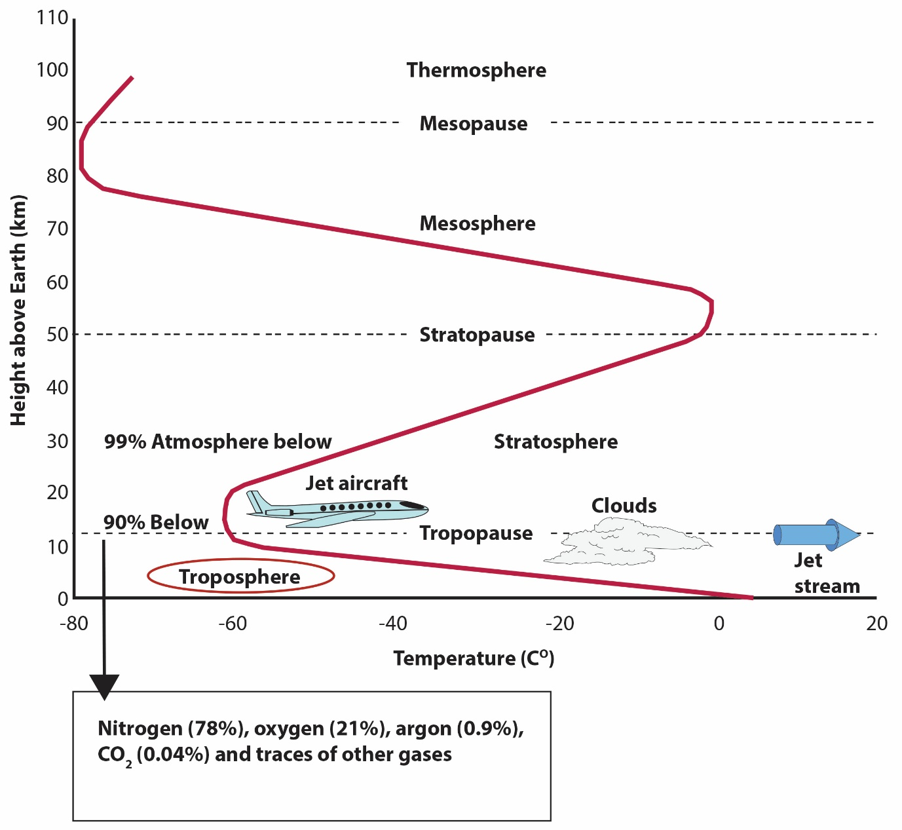
Fig. 99 איור 11.1: שינויי טמפרטורה באטמוספרה כתלות בגובה מעל פני השטח של כדור הארץ. שינויי הטמפרטורה מגדירים את מבנה האטמוספרה.#
{kind=link}
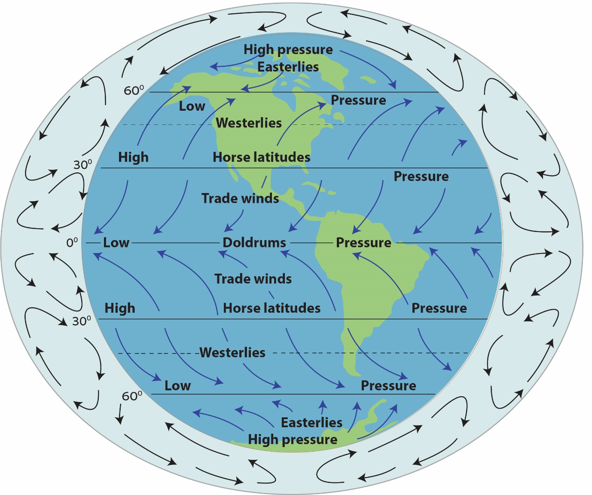
Fig. 100 איור 11.2: מערכת הרוחות העולמיות, תמונת מפה של רוחות פני השטח וחתכי גובה של תנועת האוויר בטרופוספרה. מעגלי החיצים באזור האפור שמסביב למפת כדור הארץ מציגים את תנועת האוויר בשלושת תאי הזרימה הקיימים בכל המיספרה (Hadley, Ferrel, and Polar cells). Doldrums - A low-pressure area from 5°N to 5°S of the Equator. Winds are usually calm in this area.#
מזהמי אוויר ומקורותיהם#
רוב תהליכי הזיהום בהם נדון בפרק זה קורים, כאמור, בשכבות הנמוכות של האטמוספרה, קרי בטרופוספרה, ובעיקר בחלק הנמוך שלה, הקרוי שכבת הגבול של האטמוספרה. אולם, יש עדויות לכך שבתנאים מסוימים מזהמים עוברים מהטרופוספרה אל הסטרטוספרה.[30] כך גם עוברים כימיקלים שבני אדם יצרו המשתתפים בהרס האוזון הסטרטוספרי ובהם נדון בסוף הפרק.[31]
כבר במאה הרביעית לפני הספירה כתב היפוקרטס על הקשר שבין אוויר מזוהם ובריאות.[32] במהלך ההיסטוריה היו דיווחים רבים על משקעים חומציים ועל תופעות נוספות של זיהום אוויר.[33] אולם, תשומת הלב הציבורית לנושא של זיהום אוויר והשפעתו על בריאותם של בני אדם התעוררה בעקבות מספר אירועי זיהום אוויר קיצוניים בשנות הארבעים והחמישים של המאה העשרים.[34] זיהום אוויר פוגע בבני אדם, בצמחים (בעיקר פגיעה בעלים וכתוצאה מכך בפוטוסינתזה), בבעלי חיים (למשל, הגברת הרגישות למחלות ולגורמי אלרגיה) וכן במבנים, פסלים ומבני תשתית. זיהום אוויר גורם לפגיעה בריאותית בבני אדם ברמות שונות עד כדי מוות, כתלות במידת חומרת הזיהום ובמצב הבריאותי של האנשים. אנחנו נפרט על סוגי הפגיעה השונים בהמשך הפרק.
מזהמי אוויר נפלטים ממקורות נייחים (תחנות כוח השורפות דלקים פוסיליים, מפעלי תעשייה, מכרות, שדות חקלאיים, ועוד) וממקורות ניידים (מכוניות, רכבות, ספינות ומטוסים). את מזהמי האטמוספרה מחלקים למזהמים גזיים (CO, \(SO_x\) (\(SO_2\) + \(SO_3\)), Volatile Organic Compounds (VOC),[35] \(NO_x\) (NO+\(NO_2\)), \(N_2O\), \(O_3\), HCl, \(Cl_2\), HF), מזהמים המומסים בטיפות ענן וגשם (\(H_2S\), \(SO_4^{2-}\), \(NO_3^-\)), ומזהמים חלקיקיים, אירוסולים (PM – particulate matter), [36]וכן למזהמים ראשוניים ושניוניים. מזהמים ראשוניים נפלטים ישירות ממקורות הזיהום שפורטו למעלה (לדוגמה CO, NO, \(SO_2\), PM) ומזהמים שניוניים נוצרים מריאקציות בזמן התנועה של מזהמים באטמוספרה (\(NO_2\), \(NO_3^-\), \(SO_4^{2-}\), \(O_3\), PM). מזהמים שניוניים נוצרים בתהליכים מושרי-אור וכן בתהליכים המתרחשים גם בחושך. בהקשר זה חשוב לציין שניים מבין תהליכי יצירת PM שניוניים: (1) יצירה של חלקיקים אורגניים מרחפים שניוניים (SOA – Secondary Organic Aerosols) מהתעבות תוצרי חמצון של VOC וחומרים נוספים,[37] ו-(2) חמצון של גופרית דו חמצנית גזית (\(SO_2\)) ויצירת יון סולפיט \(SO_3^{2-}\) המתמוסס בטיפות המים באטמוספרה, עובר הידרוליזה ויוצר יון סולפט (\(SO_4^{2-}\)) המגיב עם יונים כמו אמוניום (\(NH_4^+\)) ליצירת אירוסולים של מלחים (ראו בהמשך). לאחרונה עלה חשש שיצירה של סוגים מסוימים של SOA מתגברת בימים חמים, כלומר צפוי שיותר SOA ייווצרו כאשר תכיפותם של גלי חום תגבר עם ההתחממות הגלובלית.[38] בנוסף לכל המקורות הללו שמגיעים מפני השטח של כדור הארץ, מתרבים לאחרונה הדיווחים על זיהום אוויר בשכבות הגבוהות של האטמוספרה שמקורו בשאריות של לוויינים שסיימו את חייהם והתפרקו בעודם מרחפים מעל כדור הארץ.[39] סביר מאד שבעיה זאת תחמיר עם הזמן.
בעקבות אירועי זיהום האוויר של אמצע המאה העשרים והתפתחות המודעות הציבורית לסכנות של זיהום אוויר, סוכנויות הגנת הסביבה בארצות שונות וארגון הבריאות העולמי (WHO) קבעו רשימה של מזהמי קריטריון (criteria pollutants), בה נכללו מזהמים נפוצים, גזים וחלקיקים, מזהמים ראשוניים ושניוניים, ונקבעו עבורם ריכוזים מותרים באוויר (סטנדרטים סביבתיים). בשנת 1970 נחקק בארה“ב חוק אוויר נקי[40] (מספר שנים אחרי החוק המקביל של בריטניה), שחייב את ה-EPA לקבוע סטנדרטים למזהמי אוויר. ה-EPA האמריקאי קבע שני סוגי מזהמים:[41] אלו המסכנים את בריאות הציבור ואלו הקשורים לפגיעה בצמחים, בעלי חיים, ראות (visibility) ומבנים (יש גם מזהמים השייכים לשתי הקבוצות, למשל אוזון). הסוג הראשון כלל בהתחלה שישה מזהמים ונתן להם שם ”מזהמי קריטריון“ (אוזון – \(O_{3}\), פחמן חד-חמצני – CO, תחמוצות חנקן \(NO_X\), גופרית דו חמצנית \(SO_2\), חלקיקים מרחפים – PM, עופרת – Pb). במרוצת השנים ה-EPA שינה את הסטנדרטים הסביבתיים שלהם בהתאם להתפתחות המחקר הטוקסיקולוגי והאפידמיולוגי וכן הוסיף רשימה ארוכה של מזהמים נוספים (בעיקר סוגים שונים של VOC, תת סוגים של PM, ומספר מתכות רעילות). אולם, רשימת מזהמי הקריטריון לא הורחבה.[42] כפי שנראה בהמשך, ישנם מחקרים רבים המצביעים על נזקים בריאותיים שנגרמים גם מחשיפה לחומרים שעדין לא נקבעו עבורם סטנדרטים, למשל: ננו-חלקיקים (חלקיקים הקטנים מ-0.1 מיקרומטר), פיח (BC – black carbon), בקטריות ועובש. כיום, סוכנויות הגנת הסביבה וגופי מחקר בארצות רבות מפעילים מערך של תחנות ניטור המודדות את הריכוזים של ששת מזהמי הקריטריון ולעיתים גם של מזהמים נוספים בצורה רציפה, ומפרסמות את נתוני זיהום האוויר באתרים שלהן. על פי רוב ניתן לקבל דיווח בזמן אמת של כל אחד מהמזהמים הנמדדים, ולעיתים הסוכנות מחשבת מדד זיהום אוויר כללי המשקלל את רמות הזיהום של כל המזהמים[43] ומחלק את איכות האוויר למספר רמות שנעות בין ”טוב“ ל“מסוכן לבריאות“. דוגמא לכך הוא אתר המערך לניטור אוויר של משרד הגנת הסביבה של ישראל.[44] מערכת התקינה, שמשמעה קביעת תקנים סביבתיים ותקני פליטה, היא דבר דינמי שמתעדכן מעת לעת על סמך התקדמות הידע שלנו על ההשלכות הבריאותיות והסביבתיות (טבלה 11.1).[45]
בישראל רוב התקנים למזהמי אוויר דומים לתקנים שנקבעו בארצות הברית ובאירופה, אולם לגבי PM (\(PM_{10}\), \(PM_{2.5}\))[46] התקנים שונים, משום שישראל נמצאת במיקום גיאוגרפי שונה מרוב מדינות ה-OECD, כלומר, בקרבת מדבריות המשחררים לאטמוספרה כמויות גדולות של PM, ושאין דרך פשוטה להשפיע על הפליטות שלהם. במהלך השנים הסתבר ש-PM, עליהם נרחיב בהמשך, גורמים לנזקי בריאות חמורים יותר ממזהמים אחרים. בעקבות כך התקנים לריכוז סביבתי של PM שונו וממשיכים להשתנות הן בעולם[47] והן בישראל[48] בתכיפות גדולה יחסית. נרחיב כעת את הדיון על כמה ממזהמי הקריטריון ונסקור את התהליכים האטמוספריים בהם הם משתתפים ואת ההשלכות הבריאותיות של החשיפה להם. בפרק 12 נדון בהיבט הסוציו-אקונומי של חשיפה לזיהום אוויר.
{kind=link}
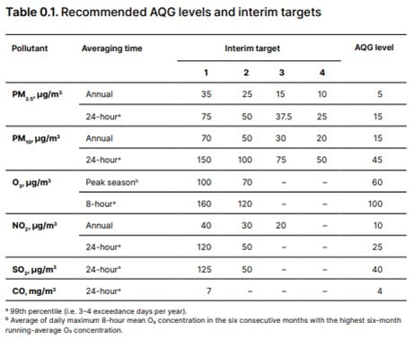
Fig. 101 טבלה 11.1: הנחיות של ארגון הבריאות העולמי (WHO) לגבי סטנדרטים סופיים (12/2022) וסטנדרטי ביניים של מזהמי הקריטריון (למעט עופרת). שימו לב שיש ערכים אחרים לזמני חשיפה שונים (שנתי מול 8/24-שעות).#
AQG = air quality guidelines
תחמוצות חנקן (\(NO_x\) (\(NO+NO_2\)), \(N_2O\), \(NO_3^-\))#
הדיון בפרק זה מתבסס ומרחיב את מה שנכתב על מחזור החנקן בפרק 5. הדיון מתמקד בחנקן פעיל, ומתעלם מחנקן גזי אטמוספרי (\(N_2\)) שהוא אינרטי מבחינה כימית. התהליכים העיקריים המשפיעים על חנקן אטמוספרי מופיעים באיור 11.3. בנוסף לתחמוצות חנקן (\(NO_x\) (NO+\(NO_2\)), \(N_2O\), \(NO_3^-\)) חשוב להזכיר גם את האמוניה (\(NH_3\)), תרכובת גזית שבה החנקן נמצא במצב חמצון מחוזר והיא שחקן חשוב ביצירת אירוסולים שניוניים באטמוספרה ומהווה בעצמה מזהם אטמוספרי, בעיקר סמוך למקורות פליטה (תעשייה ושדות חקלאיים), אולם איננה אחד ממזהמי הקריטריון. כמו כן, לא נדון בתחמוצות חנקן נוספות שזמן השהות שלהן באטמוספרה קצר, אם כי הן משתתפות במגוון תהליכים פוטוכימיים ותרמיים (למשל, \(NO_3\) (radical),[50] \(N_2O_3\), \(N_2O_4\), \(N_2O_5\)). חשוב לציין בנוסף את החומצות החנקתיות (HONO, \(HNO_3\)), כאשר HONO (nitrous acid) [51] הוא שחקן חשוב ביצירת רדיקל חופשי של אוזון ושל הידרוקסיד (\(\cdot OH\)),[52] ואילו \(HNO_{3}\) הוא שחקן מפתח ביצירת גשם חומצי. אנחנו נדון בשניהם ביתר הרחבה בהמשך. כפי שציינו בפרק על התחממות גלובלית, \(N_{2}O\) הוא גז החממה השלישי בחשיבותו, בנוסף להיותו משתתף פעיל בהרס האוזון הסטרטוספרי (ראו בהמשך הפרק). בנוסף לכל אלה, תרכובות חנקן יוצרות אירוסולים, שהנפוץ בהם הוא אמוניום-ניטרט (\(NH_4\)\(NO_3\)).
תחמוצות החנקן \(NO_x\)(NO+\(NO_2\)) מוגדרות כמזהם קריטריון. \(NO_X\) מוגדר כסכום של NO ו-\(NO_{2}\) משום שבמהלך היממה שתי התרכובות הללו משתחלפות בהשפעת קרינת השמש ואינטראקציה עם מרכיבים אחרים באטמוספרה. תרכובות \(NO_x\) הן שחקניות מרכזיות בתהליכים שונים באטמוספרה, כמו למשל ייצור אוזון (\(O_{3}\)) טרופוספרי,[53] אחד מתהליכי יצירת ערפיח פוטוכימי (photochemical smog) בו נדון בהמשך הפרק. NO הוא מזהם ראשוני הנפלט ממנועי שריפה פנימית ומתחנות כוח, בעיקר כתוצאה מריאקציה בין חנקן אטמוספרי (\(N_2\)) וחמצן אטמוספרי (\(O_2\)) במנוע שריפה פנימית, וכן כתוצאה מחמצון של תרכובות חנקן הנמצאות בדלק פוסילי. כמויות קטנות של \(N_2O\) נפלטות כמזהם ראשוני ממנועי שריפה פנימית בנוסף ל NO. פירוק דשנים עשירי חנקה (ניטרט -\(NO_3^-\)) בעיקר בשדות המקבלים עודפי דשנים (denitrification – פרק 5) מהווה מקור נוסף לתרכובות \(NO_X\) ו \(N_{2}O\) הנפלטות לאטמוספרה.[54] מעברי חמצון – חיזור של תחמוצות חנקן הם מורכבים ביותר, ומתוארים במספר גדול של ספרי לימוד ומאמרים,[55] ולכן לא נדון בהם בפירוט במסגרת הפרק הזה. נציין רק ש NO ו-\(NO_{2}\) משתתפים כאמור במחזור יממתי. NO מגיב עם אוזון או מחמצנים נוספים ויוצר \(NO_{2}\).[56] זאת כיוון שרוב \(NO_{2}\) באטמוספרה מגיע ממקור זה, \(NO_{2}\) הוא בעיקר מזהם שניוני. עם התגברות קרינת השמש, \(NO_{2}\) מתפרק ל-NO תוך כדי תגובה עם חמצן אטמוספרי ליצירת אוזון. במקביל, חלק מה-\(N_2O\) מגיב עם רדיקל \(\cdot OH\), מתחמצן ויוצר חומצה חנקתית גזית (\(HNO_{3}\)) המסולקת במהירות מהאוויר ע“י התמוססת בטיפות מים וכן ספיחה לפני שטח של חלקיקים (PM) אטמוספריים. בתמיסה, חומצה חנקתית מתפרקת במהירות ומשחררת פרוטון (H^+^), תהליך התורם ליצירת גשם חומצי, כפי שנראה בהמשך הפרק. \(NO_2\) גורמת לבעיות נשימה בעיקר אצל אנשים הסובלים ממחלות רקע, וביחד עם אירוסולים של ניטרט (\(NO_3^-\)) היא יוצרת עננה חומה (ערפיח פוטוכימי - photochemical smog) הפוגעת בראות (visibility), בולעת קרינת שמש וגורמת להתחממות האטמוספרה.
בעשורים האחרונים נרשמה ירידה מתמדת בפליטות של \(NO_X\) בהרבה ארצות, אם כי לאחרונה תועדה האטה בקצב הירידה, כנראה בגלל פליטה גדולה מהצפוי מרכבי שטח ומרכבים-מונעי דיזל.[57] במקביל, נעשים מאמצים רבים להפחית פליטות של \(N_{2}O\), אם כי כאן המשימה מורכבת יותר הן בגלל שמקור הפליטה העיקרי היא הפעילות המיקרוביאלית (denitrification) שצוינה קודם בשדות חקלאיים, והן בגלל שמנגנוני החמצון/חיזור שלו פחות ברורים,[58] עובדה המקשה על פיתוח זרזים לפירוקו.
קיימות מגוון שיטות להפחית את פליטות \(NO_X\) ממנועי שריפה פנימית, אולם אנחנו נציין רק את הממיר הקטליטי (catalytic converter) שתפקידו לסלק פחמימנים,[59] \(NO_X\), ו-CO לאחר שכבר נוצרו (ראו גם התייחסות בפרק 5 בחלק על העופרת). הממיר הקטליטי מזרז במקביל חמצון פחמימנים ו-CO ל \(CO_2\), וחיזור \(NO_X\) לחנקן אטמוספרי, \(N_2\).[60] פעולתו של ממיר קטליטי מצריכה משטחים מצופים במתכות נדירות ביותר ממשפחת הפלטינה (e.g., Pt, Pd, Rh), וכן מתכות נדירות נוספות. לכן, במקביל לתרומת הממירים הקטליטיים בהפחתת פליטות מזהמים לאטמוספרה, השימוש בהם גורם לבעיות סביבתיות חמורות באתרי הכרייה וההפקה של המתכות מהם הם עשויים.[61] לפני כמה עשרות שנים התעורר חשש שחלק ממרכיבי הממיר, בעיקר מתכות מקבוצת הפלטינה, מצטברות בצידי כבישים בריכוזים גבוהים ביחס לרקע הטבעי הנמוך מאד שלהן. החשש העיקרי היה שבזמן מעבר גזי הפליטה הלוהטים דרך הממיר, הן מתחמצנות (הופכות ממתכת במצב חמצון 0 ליון מתכתי במצב חמצון +1 או +2). ידוע שיונים של פלטינה ופלדיום מסוגלים ליצור קשרים אורגנו-מתכתיים ולגרום לנזקים גנטיים במיקרואורגניזמים שבקרקעות בצידי דרכים. נזקים אלה עלולים לשנות את האופי של חלק מהמיקרואורגניזמים ולהפוך אותם לפתוגניים. סדרה של מאמרים שפורסמו לפני כעשור הראו שככל הנראה, החשש הזה לא התממש. זאת למרות שיש הצטברות משמעותית של מתכות אלה בצידי דרכים כפי שניתן לראות מהעובדה שריכוזיהם בקרקעות בצידי דרכים גבוהים משמעותית מריכוזיהם בקרקעות מרוחקות וכן מכך שיחס Pt/Rh בצידי דרכים דומה מאד ליחס בממיר.[62]
{kind=link}
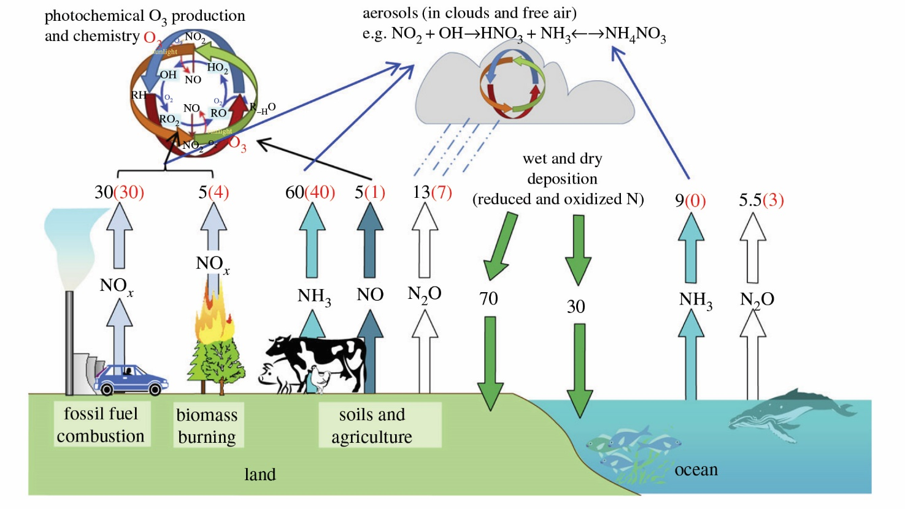
Fig. 102 איור 11.3: מקורות, תהליכים ומבלעים עיקריים של חנקן אטמוספרי פעיל. היחידות הן מגה (106) טון חנקן בשנה. המספרים בשחור מייצגים שטפים כוללים, ובאדום שטפים אנתרופוגנים. בנוסף לתהליכים המופיעים באיור חשוב לציין שברקים מקבעים כ-5 מגה-טון חנקן בשנה.#
מקור - Fowler et al. (2013) https://royalsocietypublishing.org/rstb/article-abstract/368/1621/20130164/22158/The-global-nitrogen-cycle-in-the-twenty-first?redirectedFrom=fulltext Published by the Royal Society. All rights reserved. Reprinted with permission.
Fowler et al. (2013) https://royalsocietypublishing.org/rstb/article-abstract/368/1621/20130164/22158/The-global-nitrogen-cycle-in-the-twenty-first?redirectedFrom=fulltext Published by the Royal Society. All rights reserved. Reprinted with permission.
תחמוצות גופרית (SOx (SO2 + SO32-), SO42-)#
גופרית דו חמצנית (\(SO_2\)) נפלטת כגז לאטמוספרה ממקורות רבים. כפי שכבר ציינו בפרק 5, \(SO_2\) נפלטת מהרי געש ומשריפה של דלקים פוסיליים ושל ביומסה,[64] כלומר היא מזהם ראשוני. באטמוספרה היא מתחמצנת לסולפט (\(SO_4^{2-}\)).[65] סולפט משתתף בתהליכי יצירת גשם ושלג חומצי בדומה לניטרט.[66] כמו כן, סולפט מגיב עם אמוניה או עם נתרן המגיע ממלח ים, ויוצר חלקיקים מרחפים (אירוסולים - PM). אירוסולים אלה יכולים להוות זיהום אוויר כשהם נמצאים בשכבת הגבול של האטמוספרה (נרחיב על כך במסגרת הדיון על PM), ולהשפיע על החזרת הקרינה של השמש בעיקר כשהם נמצאים בגובה רב יותר, אם כי הם משפיעים גם כשהם נמצאים בחלקים הנמוכים של הטרופוספרה. אכן, בעקבות התפרצויות וולקניות גדולות שקרו במאות השנים האחרונות תועדו באטמוספרה ריכוזים גבוהים של חלקיקים עשירי סולפט שגרמו להתקררות גלובלית.[67] מאז המהפכה התעשייתית הפעילות האנושית תורמת חלק משמעותי ממחזור הגופרית העולמי ומפליטות גופרית לאטמוספרה, בעיקר עקב שריפת דלקים פוסיליים.
באטמוספרה האוקיאנית יש תרומה משמעותית של גופרית ממלח ים שמגיע מקצף הגלים ויכול להפוך לאירוסולים וכן מפליטות של תרכובות סולפיד בעקבות פעילות ביולוגית, כגון COS ו-DMS (COS - carbonyl sulphide DMS,-(dimethyl sulphide .[68] תהליכי החמצון של גופרית באטמוספרה שפורטו לעיל מונעים בחלקם על ידי קרינת השמש (photochemical reactions) אולם יש גם ראקציות המתרחשות ללא אור. הגופרית האטמוספרית נמצאת הן בפאזה הגזית (\(SO_2\) ו \(SO_3\)), הן בפאזה הנוזלית ( \(SO_4^{2-}\),\(SO_2^-\)\(H_2O\), \(HSO_3^-\), \(SO_3^{2-}\)=) והן בפאזה המוצקה, כחלקיקים עשירי \(SO_4^{2-}\). בנוסף, ישנן פליטות של גופרית מחוזרת (\(H_2S\)) ממקורות טבעיים ואנתרופוגניים, כאשר באטמוספרה היא מתחמצנת לגופרית דו חמצנית. בדומה לתרכובות החנקן, מעברי חמצון – חיזור של תחמוצות גופרית הם תהליכים מורכבים ביותר הכוללים גם מעברים בין פאזות שונות (גז, נוזל ומוצק), ומתוארים בפירוט בספרי לימוד ומאמרים.[69] על כן, לא נרחיב עליהם במסגרת הפרק הזה.
לפני כ-100 שנה החלו בבריטניה מאמצים לסלק תחמוצות גופרית מתחנות כוח השורפות פחם,[70] אולם המאמץ העיקרי החל בשנות החמישים של המאה הקודמת בעקבות אירועי זיהום אוויר חמורים שיידונו בהמשך. בשנות השבעים התרחב המאמץ למדינות נוספות; למשל ארצות הברית, בעקבות חקיקת ”חוק אוויר נקי“ (Clean Air Act).[71] כיום נעשה שימוש נרחב בהתקנים לסילוק \(SO_2\) מארובות של תחנות כוח ומפעלי תעשייה וכן מתבצע מעבר לדלקים עם תכולת גופרית נמוכה יותר. סיבה נוספת למעבר לדלקים עם תכולת גופרית נמוכה היא שהגופרית, בדומה לעופרת, פוגעת בתפקוד הממיר הקטליטי שהוזכר קודם. ישנם סוגים רבים של התקנים לסילוק \(SO_2\), כאשר שני הסוגים העיקריים הם סולקנים לחים (wet scrubbers – כ-85% מכלל הסולקנים בארצות הברית) ויבשים (dry injection or spray drying). מנגנון הפעולה בסולקנים לחים הוא המסה, הידרוליזה והגבה של \(SO_2\) עם גיר או עם תחמוצת סידן:
\(CaCO_{3(s)}\) + \(SO_{2(g)}\) → \(CaSO_{3(s)}\) + \(CO_{2(g)}\)
\(Ca(OH)_{2(s)}\) + \(SO_{2(g)}\) → \(CaSO_{3(s)}\) + \(H_2O\)~(l)~
במקרים רבים ממשיכים את התהליך על ידי הגבה וחמצון של Ca\(SO_3\) על מנת לייצר גבס (\(CaSO_4\)·2\(H_2O\)) שאותו ניתן לשווק כחומר גלם לבנייה. כיוון שהטמעת השימוש בסולקני גופרית התקדמה בעצלתיים בעולם בכלל ובארצות המתועשות בפרט,[72] פליטות \(SO_2\) ממשיכות להוות בעיה סביבתית חמורה במשך עשורים, וה-\(SO_2\) שנפלט תורם להיווצרות משקעים חומציים (ראו בהמשך).
**
אוזון טרופוספרי (\(O_3\))#
אוזון טרופוספרי נוצר מתגובות של תרכובות VOC, מתאן (שלמעשה גם הוא VOC) ו-CO בנוכחות NOx, כלומר הוא מזהם שניוני. הוא משתתף בתהליכים ברבים בטרופוספרה. הבנת התהליכים הללו זיכתה את פול קרוטזן (Crutzen) בפרס נובל (יחד עם רולנד (Rowland) ומולינה (Molina) שחקרו את האוזון הסטרטוספרי – ראו בהמשך הפרק).[73] אוזון הינו מחמצן חזק המהווה מטרד נשימתי חריף. אוזון גם פוגע בצמחים ובבעלי חיים, ונחשב למזהם האוויר עם הפגיעה הקשה ביותר ביבולים חקלאיים.[74] כמו כן, הוא משתתף בתהליכים רבים באטמוספרה, חלקם קשור לתחמוצות חנקן שהוזכרו קודם.[75] אוזון איננו המחמצן היחיד באטמוספרה. חמצן מולקולרי (בעיקר בנוכחות זרזים כמו חלקיקים עשירים במתכות מעבר), רדיקלים חופשיים של הידרוקסיל (OH·), ורדיקלים חופשיים של ניטרט (\(NO_3\)) גם הם מחמצנים חשובים המשתתפים במגוון גדול של ריאקציות מושרות אור וריאקציות תרמיות באטמוספרה, וכן בסילוק חומרים אורגנים מזהמים ממשפחת ה-VOC.[76] לאחרונה דווח ששילוב של \(NO_3\) ואוזון באטמוספרה בריכוזים לא-חריגים גורם לחמצון תרכובות אורגניות שצמחים פולטים על מנת למשוך מאביקים, ומשפיע בעיקר על יעילות האבקה של מאביקי לילה.[77] נעשים מאמצים רבים להפחית את ריכוזי האוזון בטרופוספרה בגלל הנזקים להם הוא גורם. המאמצים מתמקדים בהקטנת פליטות NO, VOC, מתאן ו-CO. אולם, ההצלחה תלויה בשילוב נכון של גורמים רבים (כולל יחס הריכוזים ההתחלתי של המגיבים השונים), ובנוסף היא מושפעת משינויי אקלים.[78] כמו כן, יש דיווחים על כך שהמעבר מדלקים פוסיליים לביו-דלקים משפיע באופנים סותרים על אוזון ועל מזהמי אוויר אחרים, מה שמחייב הסתכלות מערכתית על מאמצי טיהור אוויר.[79]
עופרת (Pb)#
בפרק 5 דנו בהרחבה במחזור העופרת ובדרכים השונות בהן היא נפלטת לאטמוספרה. בפרק זה נדגיש שתי נקודות נוספות לגביה: (1) עופרת נבחרה כמזהם קריטריון בין היתר משום שהיא מייצגת שורה ארוכה של מתכות קורט, חלקן רעילות, הנפלטות לאטמוספרה עקב פעילות בני אדם.[80] (2) עופרת ומתכות נוספות נמצאות באטמוספרה בעיקר בחלקיקים מרחפים (PM), הן כחלק מהמרקם המינרלוגי המרכיב את החלקיקים, והן כיונים ספוחים על פני השטח של החלקיקים[81] מה שמשפיע מאד על מסיסותן וזמינותן הביולוגית.[82] ישנן אפילו עדויות הכורכות את התכונות האופטיות של PM והשפעתם על האקלים לנוכחות מתכות קורט (למשל עופרת).[83] נוכחותן של מתכות רעילות על פני חלקיקים מגבירה במקרים רבים את רעילותם של החלקיקים המרחפים, כפי שנרחיב בהמשך. מבין כל המתכות הרעילות ראוי לתת את הדעת לכספית. זאת משום שכספית יוצאת דופן מבין המתכות בכלל והמתכות הרעילות בפרט.[84] בגלל נדיפותה הרבה היא נמצאת באטמוספרה בעיקר בפאזה הגזית והרבה פחות קשורה ל-PM. מקור הפליטה העיקרי של כספית הוא שריפה של דלקים פוסיליים, בעיקר פחם ושיטות סילוק הגופרית מגזי הפליטה של תחנות הכוח הפחמיות מצליחות במקרים רבים להפחית גם את פליטות הכספית.
חלקיקים מרחפים (PM)#
חלקיקים אטמוספריים מגיעים הן ממקורות טבעיים והן מפליטות של בני אדם, כולל אבק המתרומם משטחים פתוחים שנפגעו מחציבה, כריה, בניה, חריש ומרעה לא מבוקר (בעיקר בארצות מתפתחות)[86] ומשדות שעיבודם פסק.[87] ההערכות הן שכ-2 גיגה(10^9^)-טון אבק מתרוממים לאטמוספרה מידי שנה, כ-75% שוקעים על פני היבשות וכ-25% על פני האוקיינוסים, שם הם תורמים למאזן הנוטריינטים (ראו הדיון על ברזל בפרק 10).[88] רוב החלקיקים ממקורות טבעיים מגיעים מרצועת המדבריות העולמית (אבק מדברי), בעיקר מאגנים סגורים של מקווי מים שיבשו, שדות דיונות ואפיקי נחלים יבשים.[89] כשהרוחות המקומיות חזקות דיין הן מרחיפות את החלקיקים שגודלם קטן ממאה מיקרומטר, ונושאות אותם למרחקים של עשרות, מאות ולעיתים אלפי קילומטרים. כך נוצרות סופות אבק המשפיעות על מאזן הקרינה של כדור הארץ, פוגעות בראות (visibility) ומהוות מטרד בריאותי חמור, נושאים עליהם נרחיב בהמשך. את חומרת המפגע של חלקיקים מרחפים באטמוספרה מקובל לאפיין באמצעות הפרמטר Aerosol Optical Depth (AOD).[90] הפגיעה בראות היא לעיתים מטרד אסתטי בלבד, אולם במקרים של סופות חזקות במיוחד הירידה בראות עלולה להיות מסוכנת.[91] לצד זאת, יש עדויות לכך שאבק מדברי מהווה מקור חשוב לנוטריינטים, למשל באגן האמזונס,[92] וכן שיש לו תרומה חשובה להצטברות של קרקעות באזורים סמוכים לרצועת המדבריות, למשל באגן הים התיכון.[93] כאמור, פעולות מסוימות של בני אדם מגבירות את כמות האבק האטמוספרי, למשל, רעיית יתר ועיבוד קרקעות לא נכון (ראו את המקרה של אגן האבק במערב התיכון של ארצות הברית);[94] הטיית מי נהרות הגורמת להתייבשות אגמים ולחשיפה של סדימנט אגמי מזוהם הנישא ברוח כמו למשל אגם ארל שבו דנו בפרק 9,[95] וכן אגם Salton Sea.[96] במקרה של Salton Sea, זיהום של גוף המים הגביר את הרעילות של האבק. שינויי אקלים משפיעים מאד על התפשטות או התכווצות האזורים תורמי האבק, הן בהווה בגלל פעילות בני אדם, הן באלפי השנים האחרונות והן בעבר הרחוק (כ-400 אלף שנה).[97]
חלקיקים מרחפים באטמוספרה (PM) מתחלקים לסוגים שונים בהתאם למספר פרמטרים, אולם בראש ובראשונה על פי גודלם. זאת כיוון שגודל החלקיקים קובע כמה עמוק הם חודרים למערכת הנשימה של בני אדם ובעלי חיים, ובאיזו מידה הם נוטים לשחרר את החומרים האצורים בהם שחלקם רעילים ומזיקים.[98] חלוקת הגודל המקובלת של PM היא: TSP (total suspended particles) סך כל החלקיקים המרחפים, על פי רוב חלקיקים הקטנים מכמה עשרות מיקרומטר; \(PM_{10}\), חלקיקים הקטנים מ-10 מיקרומטר; ו-\(PM_{2.5}\), חלקיקים הקטנים מ-2.5 מיקרומטר, החודרים עמוק למערכת הנשימה. יש מחקרים העוסקים גם בחלקיקים הקטנים מ-1 או אפילו מ-0.1 מיקרומטר (\(PM_1\), \(PM_{0.1}\)). כפי שנראה בהמשך, כיום קיימים תקנים לריכוז סביבתי רק ל-\(PM_{10}\) ול-\(PM_{2.5}\) ובמקרים מסוימים גם ל-TSP. אבק מדברי מכיל אחוז גבוה יותר של \(PM_{10}\) ואילו אירוסולים הנפלטים משריפת דלקים פוסיליים מכילים אחוזים גבוהים יותר של \(PM_{2.5}\) (איור 11.4).[99]
מלבד ההבדלים בגודל חלקיקים, מקורות פליטה שונים מאופיינים לרוב בהרכב מינרלוגי וכימי שונה, דבר המאפשר לזהות את מקורות הפליטה. למשל, שריפת עצים לעומת שריפת דלקים פוסיליים.[100] מבחינת הרכבם, נהוג להבחין בין PM המורכב בעיקר ממרכיבים אי-אורגנים כגון, מינרלים, אמוניה ותחמוצות גופרית וחנקן, לבין PM אורגני (OA – organic aerosols). ישנם סוגים רבים מאד של OA הנבדלים בתהליכי יצירתם, ראשוניים (primary organic aerosols - POA) לעומת שניוניים (secondary organic aerosols - SOA), וכן ברמת הנדיפות שלהם, ובהרכבם (organic carbon (OC) versus black carbon (BC)).[101] יש גם המבדילים בין כאלה שמקורם בפליטות של צמחים (biogenic), המגיעים ממקורות פליטה אנתרופוגנים, או שהם תוצרי שריפה.[102] בהרבה מקרים חלקיקי PM מכילים תערובת של חומרים אורגנים ואי-אורגנים. ההרכב הכימי של ה-PM קובע את תכונותיו הקרינתיות, למשל מידת בליעת אור לעומת החזרת אור, וכן את רעילותו לבני אדם ולמערכות אקולוגיות.[103] אנחנו נרחיב על נושאים אלה בהמשך הפרק.
חלקיקים מרחפים של מינרלי אסבסט[104] מהווים סכנה סביבתית חריפה במיוחד כיוון שחלקיקים אלה חודרים למערכת הנשימה וגורמים לגירוי מתמשך של רקמות בריאות המוביל לדלקת וליצירת סרטן. זאת בעיקר בגלל צורתם הסיבית המאורכת המאפשרת חדירה יעילה ומגבירה את פגיעתם ברקמות.[105] משטחי אסבסט (אסבסט-צמנט) היו בשימוש נפוץ בגלל היותם חומר חזק, עמיד ומבודד יעיל וזול. אולם ברגע שמשטחי אסבסט מתחילים להתבלות הם משחררים חלקיקי אסבסט (אסבסט פריך) והופכים מטרד בריאותי ממדרגה ראשונה. לכן, החל בשנות השמונים של המאה הקודמת החלו לאסור את השימוש בסוגים רבים של מינרלי אסבסט, ומשטחי אסבסט שהותקנו בעבר, סולקו תוך שימוש בשיטות שאמורות להגן על העובדים המשתתפים בתהליך.[106] למרות זאת, סוג מסוים של אסבסט (אסבסט לבן - chrysotile) נאסר לשימוש בארה“ב רק בשנת 2024. בכך ארה“ב הצטרפה ל-50 מדינות נוספות שאסרו את השימוש בו בשנים האחרונות.[107] הצפי הוא שייקח למעלה מעשור עד שמוצרים המכילים אסבסט לבן יסולקו מקרבת בני אדם, גם במדינות בהן יש מודעות לנושא.
{kind=link}
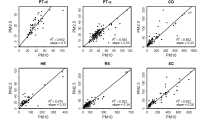
Fig. 103 איור 11.4: יחס \(PM_{10}\)/\(PM_{2.5}\) בדוגמאות אוויר שנדגמו בישראל בין 2000 ל-2010. היחס נע בין 0.53-0.50 כאשר הרוחות הביאו אירוסולים אנתרופוגנים הכוללים בעיקר חלקיקים אורגניים, חלקיקים עשירים בתחמוצות גופרית וחנקן שמקורם במזרח אירופה (PT-d, PT-s); 0.34-0.33 כאשר הרוחות הביאו תערובת של חלקיקים מהמדבר של ערב הסעודית וממקורות עירוניים (HE, RS), ו-0.26-0.23 כאשר מרבית החלקיקים הגיעו ממדבר סהרה (CD, SC).#
זמן שהות, מקורות ושינוים בזמן של מזהמים אטמוספריים#
הדיון במזהמים אטמוספריים ובתמורות החלות בהם בזמן מעופם, חייב להתייחס גם לזמן השהות שלהם באטמוספרה, הנע בין שעות ספורות לשבועות ספורים עבור רובם.[109] למשל, מזהמים ראקטיביים כמו אוזון ותחמוצות חנקן מושפעים במידה רבה מתהליכי המרה, כמו חמצון-חיזור, ושוהים באטמוספרה שעות ספורות עד יום. לעומת זאת, PM שוהים באטמוספרה בין מספר ימים ועד שבועיים. זמן השהות באטמוספרה מתכתב באופן הדוק עם משטר הרוחות העולמי, האזורי-סינופטי והמקומי. ניתן להדגים זאת באמצעות מדידות של מזהמים באטמוספרה בימים כמו יום כיפור בישראל, בהם קצב הפליטות המקומי יורד בצורה דרמטית. בעוד שריכוזי תחמוצות חנקן באטמוספרה של ישראל צונחים דרמטית, ריכוזיהם של PM כמעט ואינם משתנים, והם תלויים הרבה יותר במשטר הרוחות האזורי-סינופטי.[110]
מגמות בריכוזים של מזהמי האטמוספרה#
חלק הארי של פליטות \(N_2O\) ו-NO וכן פליטות עופרת ומתכות רעילות נוספות לאטמוספרה מגיע מפעילות בני אדם. כפי שציינו בפרק 5, כשליש עד מחצית מפליטות הגופרית לאטמוספרה מגיעה מפעילות בני אדם. אם מסתכלים על פליטות של \(SO_2\) בלבד, חלקה של התרומה האנושית הרבה יותר גדול. לעומת זאת רק 15% מכלל החלקיקים המתרוממים לאטמוספרה קשורים בפעילות אנושית. מקור הפליטה העיקרי של חלקיקים הוא קרקעות מופרעות, שהצומח עליהן נעקר, נאכל, סולק, ותאחיזת החלקיקים בהן נפגעה עקב, למשל, עיבוד קרקע לא נכון או רעיית יתר. לעומת זאת, תרומתה של פעילות תעשייתית ותחבורתית לפליטת PM היא קטנה בהשוואה לתרומה מקרקעות מופרעות. מצד שני, פעילות תעשייתית ותחבורתית פולטת את החלקיקים המסוכנים ביותר הן מבחינת הגודל והן מבחינת רעילותם. לאור זאת, נעשה מאמץ גדול לסלקם מארובות של תחנות כוח ומפעלי תעשיה תוך שימוש במגוון שיטות.[111]
רק שבע מדינות עמדו בתקנים של ה-WHO לגבי מזהמי אוויר בשנת 2023[112] ובשנת 2024.[113] גם באירופה בה יש הקפדה יתרה על פליטות מזהמים המצב אינו טוב.[114] זאת למרות שיש מגמה עולמית של שיפור כללי בפליטות ובריכוזי רוב המזהמים האטמוספריים המוכרים (כולל בישראל)[115] בעשורים האחרונים. למשל, היה שיפור ניכר באיכות האוויר בבייג’ין בין 1998 ו-2017, כפי שמוצג באיור 11.5,[116] אולם, המצב בסין לגבי ריכוזי אוזון הוא פחות מעודד.[117] יש גם עדויות רבות לגבי שיפור באיכות אוויר, בעיקר לגבי ששת מזהמי הקריטריון, במערב אירופה ובארצות הברית, הן מבחינת הריכוזים הממוצעים והן מבחינת מספר ומשך האירועים בהם ריכוזי מזהמים היו גבוהים מהסטנדרט המותר.[118] המצב עדיין גרוע בארצות רבות אחרות, כמו למשל בהודו[119] ובמספר מדינות באפריקה, כאשר הפגיעה קשה במיוחד באוכלוסיות המוחלשות באותן המדינות. לאחרונה מצטברות עדויות על נזק בריאותי הנגרם ממזהמי אוויר שלא היה מידע לגביהם בעבר ושאין עבורם תקנים, למשל, תרכובות PFAS הספוחות על פני PM.[120] כמו כן, מסתבר שחלקיקים מרחפים (PM) מכילים על פני השטח שלהם מיקרואורגניזמים שונים כמו ווירוסים, בקטריות,[121] פטריות עובש[122] ועוד. בשנים האחרונות התפרסמו עשרות מאמרים המתעדים את היקף התופעה ואת ההשלכות הבריאותיות והסביבתיות שלה.[123] לאחרונה התפרסם מחקר שניסה להראות כיצד ניתן להשתמש ב-DNA הנמצא על פני חלקיקים אטמוספריים על מנת לכמת את מגוון המינים באזור המקור של החלקיקים.[124]
למרות המגמה הכללית של שיפור באיכות אוויר בעשורים האחרונים, יש עדין דרך ארוכה. למשל, בארצות הברית כמעט 50% מהאוכלוסייה עדין חשופים לאוויר מזוהם ב-PM או אוזון, ומספרם עלה בשנים האחרונות כנראה בעקבות גלי חום, בצורות ושריפות חורש.[125] זאת כאשר כ-50 מיליון אמריקאים נמצאים באזורים שאין בהם ניטור איכות אוויר רציף.[126] ישנן גם פערים באיכות אוויר בין ישובים מבוססים כלכלית לבין ישובים או שכונות עניות, כמו למשל פער ברמת זיהום אוויר בין שכונות של לבנים ושכונות של היספנים ושחורים בארצות הברית הנובע מן המרחק ממקורות זיהום כגון כבישים ראשיים ומפעלי תעשייה.[127] עקב העלייה בתכיפות של שריפות חורש ויער בשנים האחרונות, ישנה הרעה באיכות האוויר בקיץ (בעיקר PM) בצפון אמריקה ומערב אירופה, והתופעה אף יותר חמורה באזורים אחרים בכדור הארץ.[128] ישנן גם עדויות על פליטות משמעותיות של אמוניה ממרכזי הזנה של בקר (ראו פרק 2), הגורמת להרעה באיכות האוויר באזורים חקלאיים מסוימים, או לפחות להאטה בקצב השיפור שנצפה באזורים אחרים.[129] לאחרונה התפרסמו כמה דיווחים על עלייה בנפיצות באטמוספרה, זמינות ופוטנציאל החדירה של חלקיקי מיקרו-פלסטיק למערכת הנשימה של בני אדם ובעלי חיים בעקבות תהליכי שחיקה.[130] בנוסף, מתרבים המחקרים הטוענים ששינויי אקלים מובילים ליותר אירועים של סטגנציה אטמוספרית, מה שגורם להצטברות מזהמים בשכבת הגבול, למשל, יש הטוענים שריכוזיהם של PM ואוזון באטמוספרה של ערים צפויים לעלות.[131]
{kind=link}
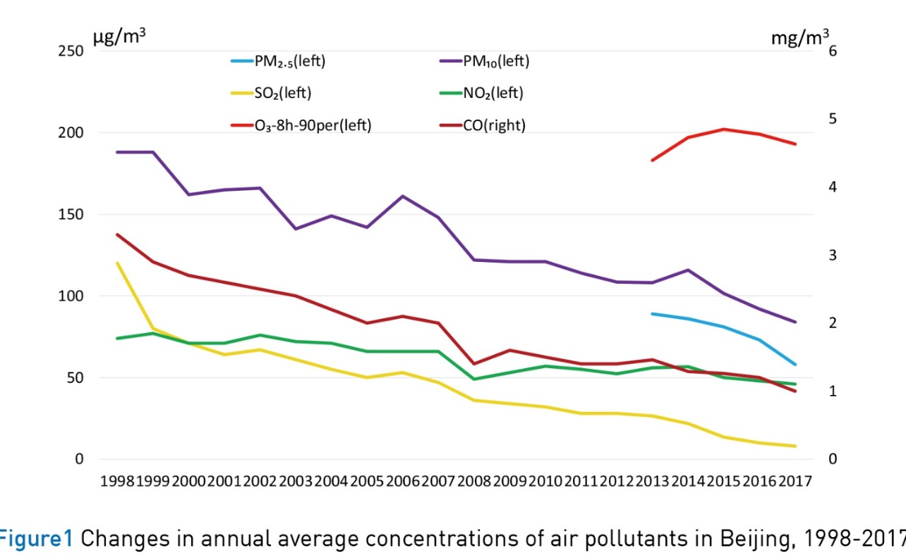
Fig. 104 איור 11.5: ריכוזים של מזהמי אוויר בבייג’ין בשנים 1998-2017.#
מקור – UN Environment (2019) https://wedocs.unep.org/bitstream/handle/20.500.11822/27645/airPolCh_EN.pdf?sequence=1&isAllowed=y ; Copyright © United Nations Environment Programme, 2019. Reprinted with permission.
ערפיח (SMOG) ומשקעים חומציים – זיהום אטמוספרה על ידי מספר מזהמים הפועלים יחד#
ערפיח אטמוספרי נוצר כאשר שילוב של מספר מזהמים גורם לתופעה סינרגטית כלומר, התוצאה מסוכנת מסך כל מרכיביה. אנחנו מכירים שני סוגים של ערפיח: ערפיח פוטוכימי (photochemical smog) וערפיח גופריתי (Sulphurous smog). ערפיח פוטוכימי[132] נוצר בתהליך שבו תחמוצות חנקן (\(NO_x\) (NO, \(NO_2\)), HONO – nitrous acid) מגיבות עם תרכובות אורגניות נדיפות (VOC) שנפלטות מצמחיה וממנועי שריפה פנימית או עם מתאן ו-CO. הערפיח החום-עכור פוגע קשות בראות (visibility) ומהווה סכנה בריאותית משום שהוא מכיל בתוכו מספר תרכובות ראקטיביות ובראשן אוזון, \(NO_2\) ו-PM (מכילי ניטרט). אנרגיית השפעול של התהליך מתקבלת מקרינת השמש באורכי גל שונים.[133] תהליכים מושרי-אור באטמוספרה אינם מוגבלים ליצירת ערפיח פוטוכימי. למשל, יש עדויות לחמצון פוטוכימי של VOC (למשל בנזן),[134] ליצירת רדיקל הידרוקסיד (·OH radicals)[135] ותרכובות חמצן פעילות אחרות (ROS – reactive oxygen species)[136] על פני השטח של PM באופן כללי ועל ידי תחמוצות ברזל הנמצאות כ-PM בטיפות ענן וערפל.[137] יש גם עדויות לתהליכי חיזור פוטוכימיים של תחמוצות ברזל בנוכחות חומרים אורגניים המומסים במי ענן[138] ועוד. ערפיח פוטוכימי נוצר באזורים עירוניים רבים (דוגמאות בולטות הן מקסיקו-סיטי ולוס אנג’לס וכן תל אביב וחיפה, בעיקר בתקופת החורף), בהן קרינת השמש גבוהה ויש הרבה ימים בהם נוצרים תנאי יציבות אטמוספרית (אינוורסיה - inversion) הגורמת להצטברות מזהמים ראשוניים כמו תחמוצות חנקן ו-VOC בשכבת הגבול האטמוספרית.[139]
ערפיח גופריתי מתפתח בתנאים של יציבות אטמוספרית, כאשר שריפה של דלק פוסילי עתיר-גופרית, בעיקר פחם וביטומן מתנורים לחימום ביתי ותחנות כוח משחררת לאטמוספרה פיח (BC – black carbon) וגופרית דו חמצנית (\(SO_2\)) שמתחמצנת לסולפט בטיפות הערפל והופכת אותן לחומציות ביותר. האוויר נעשה עכור והראות יורדת דרמטית. שני סוגי הערפיח גורמים לקשיי נשימה, לעלייה באשפוז עקב קשיי נשימה ולעלייה במקרי מוות של אוכלוסיות רגישות (זקנים, ילדים ומבוגרים הסובלים ממחלות בדרכי הנשימה). ערפיח גופריתי היה הגורם לאירוע זיהום האוויר המכונן של לונדון בשנת 1952. כפי רואים באיור 11.6, מספר מקרי המוות בלונדון עלו מכ-250 ליום לפני אירוע הערפיח של 1952 לכ-850 מקרים ליום של שיא האירוע, וגל התמותה נמשך מספר שבועות לאחר סיום האירוע.[140] בעקבות הערפיח הגדול של לונדון ננקטו שורה של צעדים משמעותיים שתרמו להפחתה משמעותית בריכוזי פיח וגופרית באוויר של העיר. ביניהם ראוי לציין שימוש בדלקים נקיים יותר והרחקת תחנות כוח ומפעלי תעשייה ממרכז העיר. שבעים שנה לאחר האירוע, פליטת מזהמי אוויר (\(SO_2\), \(PM_{2.5}\), \(NO_x\)) בלונדון נמוכה עשרות מונים בהשוואה לערכים של שנות החמישים.[141] לאחרונה נטען שמכל המרכיבים הללו, הקריטי ביותר ליצירת ערפיח הוא ריכוז הפיח, המהווה מצע יעיל לחמצון \(SO_2\).[142]
בשנות השמונים של המאה הקודמת התפרסמו מחקרים רבים על הנזקים שגורמים משקעים חומציים (גשם ושלג המכילים ריכוזים גבוהים של ניטרט וסולפט מומסים) לגופי מים מתוקים, יערות ושטחים פתוחים הנמצאים עשרות ומאות קילומטרים במורד הרוח מתחנות כוח ומפעלי תעשיה ששרפו דלקים פוסיליים.[143] הבעיה של משקעים חומציים חמורה במיוחד כאשר בקרקע ובגופי המים אין מספיק חומרים בסיסיים (כמו קרבונט מומס או חלקיקי) היכולים לסתור את החומצה. מאמצים רבים הושקעו בהפחתת פליטות תחמוצות חנקן[144] ממכוניות (באמצעות ממיר קטליטי) ותחמוצות גופרית[145] מתחנות כוח ומפעלי תעשיה (שימוש בפחם דל גופרית, הכנסת סולקנים ומעבר מפחם לגז כמקור אנרגיה). בעקבות צעדים אלו, תופעות הגשם החומצי פחתו במידה ניכרת, בעיקר בארצות צפון אמריקה ואירופה, אם כי הן עדיין מתרחשות באפריקה ובדרום-מזרח אסיה.
{kind=link}
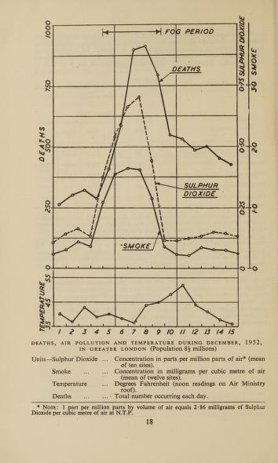
Fig. 105 איור 11.6: מספרי מתים יומיים, ריכוזי 2SO, ופיח (SMOKE) במהלך חודש דצמבר 1952 בלונדון.#
מקור – Beaver, H. (1953) https://archive.org/details/b32170129/
זיהום אוויר תוך ביתי#
מבחינת זיהום אוויר, ביתו של אדם איננו מפלטו.[146] מסתבר שבבית אנחנו נחשפים לריכוזים גבוהים של מגוון מזהמי אוויר,[147] לעיתים ברמות העולות על ריכוזם מחוץ לבית. זיהום תוך-ביתי כולל מזהמים המוכרים גם מחוץ לבית כמו CO, \(NO_X\), VOC, וסוגים שונים של PM. בנוסף לאלה, ישנם חומרים הנפלטים ממגוון מוצרים הנמצאים בבית כמו צבע, חומרי ניקוי, בדים ועוד. רוב המזהמים הללו נופלים לקטגוריות של VOC או PM ונוספים עליהם גם פטריות עובש ובקטריות.[148] ברור לגמרי שחומרת השפעתם של מזהמים תוך-ביתיים היא פועל יוצא של תכנון הבית, מודעות, מידת אוורור, מיקום גיאוגרפי, תנאי חיים ורמת חיים.[149] כצפוי, אוכלוסיות מוחלשות החשופות יותר למפגעים סביבתיים מחוץ לבית, חשופות יותר גם לזיהום אוויר תוך-ביתי.[150] לאחרונה נעשים מאמצים לשנות את המצב הזה.[151] חשיפה לעשן סיגריות היא אחד הנושאים המטרידים ביותר לגבי זיהום תוך ביתי. עשן סיגריות מכיל כ-70 חומרים רעילים חשודים כמסרטנים,[152] והסביבה הביתית היא המרחב העיקרי בו אנחנו נחשפים אליו, הן המעשנים והן החולקים אתם את הבית.[153] כמו כן, בעשורים האחרונים גובר החשש מנוגדי שריפה המכילים חומרים החשודים כמסרטנים ומשבשי פעילות הורמונלית (ראו פרק 12).[154] פורמלדהיד (formaldehyde)[155] הנמצא ברבים מחפצי הבית, הוא חומר רעיל נוסף שריכוזו בבתים גבוה בהרבה מאשר בחוץ.
בבתים הנבנים על גבי סלעים המכילים ריכוזים גבוהים יחסית של אורניום (U) עלולים להצטבר ריכוזים מזיקים של גז אציל ראדון (Rn) שהוא תוצר פירוק (דעיכה) רדיואקטיבי של אורניום, והוא עצמו רדיואקטיבי ופולט חלקיקי α העלולים לפגוע ב-DNA (ראו פרק 4). הדרך היעילה ביותר להפחית את המפגע היא באמצעות אוורור הבית, בעיקר המרתף וקומת הקרקע. מדובר בתהליך טבעי, אולם ההיבט הסביבתי המעניין קשור לאפקט סינרגטי בין חשיפה לראדון ועישון. בחלק מהמחקרים (אך לא בכולם) נמצא שמעשנים מגלים רגישות גבוהה יותר לנזקי ראדון לעומת לא מעשנים.[156] בסך הכל זיהום אוויר תוך ביתי גורם למספר דומה של מקרי מוות בשנה בהשוואה לזיהום אוויר חוץ-ביתי. נרחיב על כך בסעיף הבא.
זיהום אוויר כמקור לתחלואה ומוות#
זיהום אוויר חוץ- ותוך-ביתי פוגע מאד בבריאות.[157] זיהום אוויר מגדיל את הסיכוי ללקות בהתקפי לב, שבץ-מוחי,[158] סרטן ריאות[159] ומחלות נשימתיות כרוניות ואקוטיות כולל אסתמה, בריחת סידן[160] ועוד. שבץ מוחי (stroke) והתקפי לב (IHD)[161] תורמים ביחד ליותר משני שליש ממקרי המוות (איור 11.7 כולל מקורות).[162] לאחרונה דווח על פגיעות בריאותיות נוספות, כמו לידה מוקדמת (preterm birth),[163] פגיעות במערכת העצבים המרכזית, פגיעה בהתפתחות ילדים[164] והגדלת הסיכוי ללקות בסוכרת סוג 2.[165] ההערכה של ה-WHO היא ש-99% מאוכלוסיית העולם חיה באזורים בהם במהלך השנה יש חריגות מתקני זיהום האוויר המומלצים, בחלק מהמקומות אף בצורה כמעט קבועה. יתרה מזאת, לאחרונה הסתבר שנזקים בריאותיים נגרמים גם כאשר הריכוזים נמוכים יותר מהתקנים הסביבתיים.[166] ב-2019 דיווח ה-WHO כי זיהום אוויר חוץ-ביתי גרם לכארבעה מיליון מקרי מוות, וזיהום תוך-ביתי לכשלושה מיליון מקרי מוות, מתוכם כ-240 אלף מקרי מוות של ילדים מתחת לגיל חמש.[167] הערכות מעט יותר גבוהות פורסמו על ידי גופים אחרים והן מופיעות באיור 11.8. מחקרים אחרים דרגו את זיהום האוויר כגורם המוות הרביעי או אף השני בחומרתו בעולם[168] (לגבי סין – ראו בהמשך).
מכלל מזהמי האוויר, רוב הפגיעות הבריאותיות והתמותה מיוחסות ל-PM ובמידה פחותה אך עדין משמעותית גם לאוזון[169] ול-\(N_2O\),[170] ויש המצביעים על הסכנה הבריאותית עקב שילוב של זיהום אוויר (בעיקר אוזון) וגלי חום.[171] העדות הראשונה לכך הגיעה ממחקר מכונן שהתפרסם ב-1993 (Harvard Six Cities study) וממחקרי המשך (טבלה 11.2).[172] כעשור לאחר מכן התבצע מחקר המשך שהיה מקיף ביותר, אשר עקב אחרי כחצי מיליון בני אדם והעלה מספר תצפיות מרכזיות:[173] (1) קיימות עדויות לסיכונים בריאותיים של PM הן ממקורות קרובים והן כתוצאה מזיהום אוויר חוצה גבולות; (2) חלקיקים קטנים (למשל \(PM_{2.5}\)) מסוכנים יותר לבריאות בהשוואה ל-PM גס יותר; (3) כל עלייה של 10 מיקרוגרם למטר מעוקב אוויר בריכוז של \(PM_{2.5}\) מעלה את סיכויי התמותה ב-6% (סטנדרט חשיפה מותר: \(PM_{2.5}\) (24-hour) = 35 µg/m^3^); (4) למרות שניסויי מעבדה מצביעים על נזקים דלקתיים חמורים יותר כתוצאה מחשיפה לחלקיקים המגיעים משריפת דלקים פוסיליים בהשוואה לסוגי חלקיקים אחרים, אין לכך ביטוי במחקרים אפידמיולוגיים ו-(5) הממצא המדאיג ביותר שנמצא הוא קיומן של פגיעות בריאותיות בקרב האוכלוסייה גם בגלל חשיפה לריכוזים נמוכים יחסית של \(PM_{2.5}\). זאת תוצאה מדאיגה עקב העלייה בתכיפותן של שריפות יער, סוואנות וביצות[174] שפולטות הרבה \(PM_{2.5}\) ומשפיעות על שטחים נרחבים.
על פי דוח של ארגון הבריאות העולמי שהוזכר קודם, כשבעה מיליון אנשים מתים בעולם מידי שנה בגלל זיהום אוויר ביתי וחוץ בייתי. כ-90% ממקרי המוות הנובעים מזיהום אוויר קרו בארצות שאינן עשירות, בעיקר באפריקה, דרום-מזרח אסיה ומערב האוקיינוס השקט. בארצות אלה יש למעלה משני מיליארד אנשים המבשלים על אש פתוחה או עם תנורים ללא אוורור מתאים. על מנת לשפר את המצב הזה יש לנקוט בשורה של צעדים להפחתת הזיהום.[175] ראשית כל, יש לעבור לשימוש בתנורי בישול שפולטים פחות מזהמים, לעבור לתחבורה שאיננה מזהמת, לטפל בעשן ארובות מפעלים ותחנות כוח ובעיקר לעודד מעבר למקורות אנרגיה שאינם דלקים פוסיליים או צמחים. הדוח של ארגון הבריאות העולמי מ-2016 כולל הערכה פרטנית לגבי כל מדינה. למשל, בישראל ההערכה היא שמדי שנה נגרמים כ-1200 (±300) מקרי מוות מוקדם, כתוצאה מזיהום אוויר.[176] בשנים האחרונות התפרסמו מספר מחקרים שניסו לאמוד את הנזק הכלכלי (עקב תמותה ואשפוז) בעקבות חשיפה לזיהום אוויר חלקיקי,[177] והגיעו להערכת עלות עולמית של כ-5 טריליון דולר בשנה (2015).
במהלך השנים נבחנו מנגנונים אפשריים לנזק הבריאותי שגורמת חשיפה לריכוזים גבוהים של PM.[178] כך למשל פורסמו מנגנונים המסבירים כיצד זיהום של PM גורם לבעיות לבביות.[179] נטען גם כי דלקת כרונית בתאי ריאה כתוצאה מחשיפה לזיהום אוויר חלקיקי, היא אחד המנגנונים העיקריים הקושרים בין זיהום אוויר וסרטן. זאת מאחר ונמצא קשר בין חשיפה לזיהום אוויר והפעלת חלבונים הקשורים לתהליכים דלקתיים במערכת החיסון. כלומר, זיהום אוויר עלול לגרום לסרטן ריאות מבלי להשפיע על הדנ“א ומבלי לייצר מוטציות גנטיות, אלא בגלל יצירת סביבה דלקתית שגורמת לתאים בעלי מוטציות קיימות לעודד התפתחות של סרטן.[180] במקביל, נצפה שחרור ROS (ROS – reactive oxygen species) בנוזל ריאות בעקבות תהליכי חמצון-חיזור של מתכות מעבר שככל הנראה היו קשורות ל-PM. [181]
ההסבר הראשוני לעליה ברעילותם של PM ככל שהם קטנים יותר, נובע מעליה ביכולת החדירה שלהם למערכת הנשימה (איור 11.9) ושחרור מוגבר של רעלים מפני השטח שלהם.[182] לאחרונה מתפרסמים יותר ויותר מאמרים על הסכנה הטמונה בננו-חלקיקים (הקטנים מ-0.1 מיקרומטר) עקב השימוש ההולך וגובר בהם בתהליכי ייצור.[183] למשל, דווח שננו-חלקיקים מצליחים לעבור ישירות למערכת הדם דרך הנימיות של הריאות (alveoli – איור 11.11) [184] ואף עלולים לחסום את דרכי האוויר בהן. כמו כן, פורסם שהרעילות של סוגים מסוימים של ננו-טיוב (nanotube) איננה ישירה, אלא נובעת מיצירת תרכובות חמצן פעילות בתא (ROS – reactive oxygen species), כנראה בגלל שיש מתכות מעבר בחלקיקים.[185] מאמר אחר הצביע על נזק לריאות (lung fibrosis) הנגרם מחשיפה לננו-טיוב.[186] ישנם גם מאמרים הקושרים חשיפה לננו-חלקיקים עם התפתחות סכרת מסוג 2 (תנגודת אינסולין).[187] לאור ממצאים אלו יש הטוענים שמדידה של מספר החלקיקים המרחפים, בדגש על ננו-חלקיקים, מהווה מדד טוב יותר לנזק הבריאותי שהם גורמים בהשוואה למדידה של המסה שלהם ליחידת נפח שלל אוויר.[188]
שריפות יער פולטות תערובת של גזים (למשל CO), תרכובות אורגניות נדיפות (למשל PAH), ו-PM (בעיקר BC - פיח), כאשר, ה-PM מהווים את המטרד הסביבתי והבריאותי העיקרי.[189] כמו אירועי זיהום אוויר אחרים, הן גורמות לנזקים בריאותיים ומגבירות את מספר המאושפזים בבתי חולים עקב בעיות נשימה ופגיעה לבבית.[190] לאחרונה דווח שחשיפה של נשים בהריון לעשן שריפות גורמת לירידה במשקל התינוק.[191] כמו כן נאמד כי חשיפה ל-PM עקב שריפות תורמת חלק קטן ממקרי המוות הכרוכים בזיהום אוויר,[192] אולם מספר זה צפוי לעלות בשנים הקרובות עקב העלייה בתכיפותן ובעוצמתן של שריפות יער בגלל ההתחממות הגלובלית. התגברות תכיפותן של שריפות יער וירידה בלחות הקרקע באזורים ממוזגים בעקבות שינויי אקלים, יצטרפו לגורמים אחרים, כגון הגברת יצור והפקת חומרי גלם, המשך שימוש בדלקים פוסיליים, בהגברת הפגיעה הבריאותית והכלכלית של זיהום אוויר (איור 11.11).[193] כפי שרואים באיור 11.11, לזיהום אוויר בסין יש השלכות בריאותיות וכלכליות מזיקות ביותר. כך גם עולה ממאמר שהתפרסם ב-2015, הטוען שכ-17% ממקרי המוות בסין נגרמים בגלל זיהום אוויר פנים- וחוץ-ביתי.[194] נתונים דומים התפרסמו במאמרים שהתפרסמו ב-2017 וב-2020,[195] כאשר האחרון העריך כי חשיפה כרונית לזיהום אוויר גורמת פי 10 יותר מקרי מוות בהשוואה לחשיפה לאירועי זיהום אקוטיים. מצד שני, כפי שהראנו קודם, בסין נעשים מאמצים רבים להפחית את זיהום האוויר ואף נרשמות גם הצלחות חלקיות (איור 11.5).
באופן כללי יש החמרה בסטנדרטים סביבתיים (רמות זיהום מותרות), אבל קיים קונפליקט מבני בעת קביעת סטנדרטים בין שיקולים בריאותיים לשיקולים כלכליים ופוליטיים כמו היכולת לאכוף תקנות. שיקולים בריאותיים מתבססים על קביעת רעילות סביבתית באמצעות ענפים שונים של מחקר: (1) מחקר טוקסיקולוגי (בעיקר עם חיות מודל). מחקר זה בעייתי הן מבחינה אתית והן בגלל המגבלה בהסקת מסקנות לגבי בני אדם, במיוחד במחלות מורכבות העוסקות בתפקודים גבוהים. (2) מחקר אפידמיולוגי הוא מדע מורכב וקשה לקבוע בו סיבתיות. (3) מחקר אנליטי המבוסס על היכולת למדוד ריכוזי חומרים בצורה אמינה, ורצוי בפרקי זמן קצרים. (4) מחקר מטאורולוגי המתבסס על שימוש במודלים ממוחשבים על מנת לעקוב אחר פיזור מזהמים. חשוב להדגיש שקשה יותר למצוא סיבתיות כאשר מדובר בנזקים כרוניים ואילו קל יותר כשמדובר באירועי זיהום אקוטיים. כמו כן, זיהום אוויר מאופיין בכך שחלקו מגיע לעיתים ממרחקים, נישא ברוח, תרתי משמע, ולכן מחייב שיתוף פעולה בין-מדינתי על מנת להתמודד אתו. יחד עם זאת ברור כי איכות אוויר ירודה מהווה גורם סיכון לתמותה ותחלואה במדינות רבות.
{kind=link}
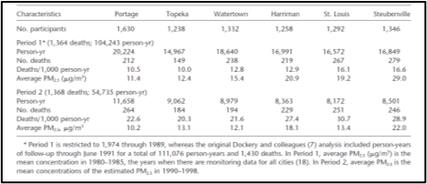
Fig. 106 טבלה 11.2: מספר כללי של מקרי מוות כתוצאה מהתקפי לב וסרטן בשש הערים שהשתתפו במחקר המקורי משנת 1993 (1974-1989) ובמחקר המשך (1990-1998).#
מקור – Laden, F. et al. (2006) https://academic.oup.com/ajrccm/article-abstract/173/6/667/8528153?redirectedFrom=fulltext.
{kind=link}
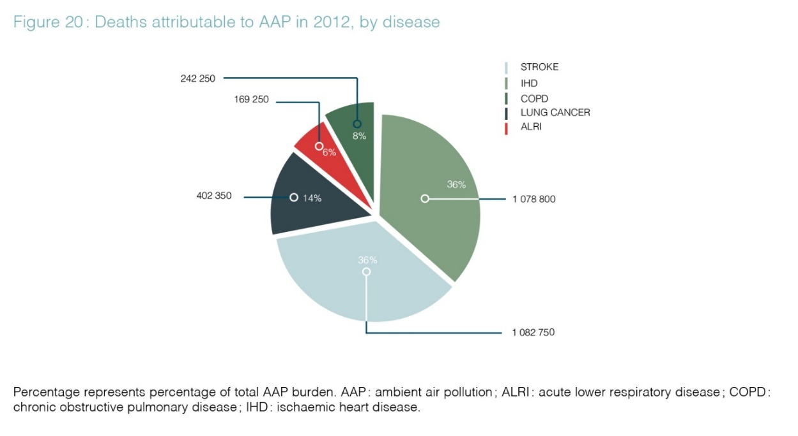
Fig. 107 איור 11.7: מספר מקרי מוות עקב מחלות הנגרמות מחשיפה לזיהום אוויר וחלקן היחסי.#
מקור – World Health Organization (2016) https://iris.who.int/handle/10665/250141 ; © Copyright WHO, 2021. All Rights Reserved. Reprinted with permission.
{kind=link}
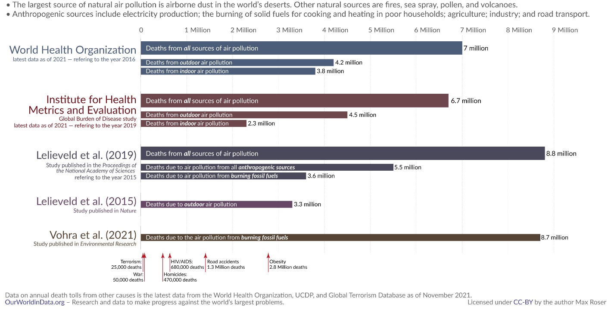
Fig. 108 איור 11.8: הערכות של מחקרים שונים לגבי מספר מקרי מוות מזיהום אוויר חוץ- ותוך-ביתי.#
מקור – Our World in data, https://ourworldindata.org/data-review-air-pollution-deaths ; Reprinted with permission.

Fig. 109 איור 11.9: מידת החדירה של PM למערכת הנשימה כתלות בגודל החלקיקים. גדלים של PM במיקרומטר. על פי – Wilson, R. & Spengler, J. D. (1996) Particles in our air: Concentrations and health effects.#
{kind=link}
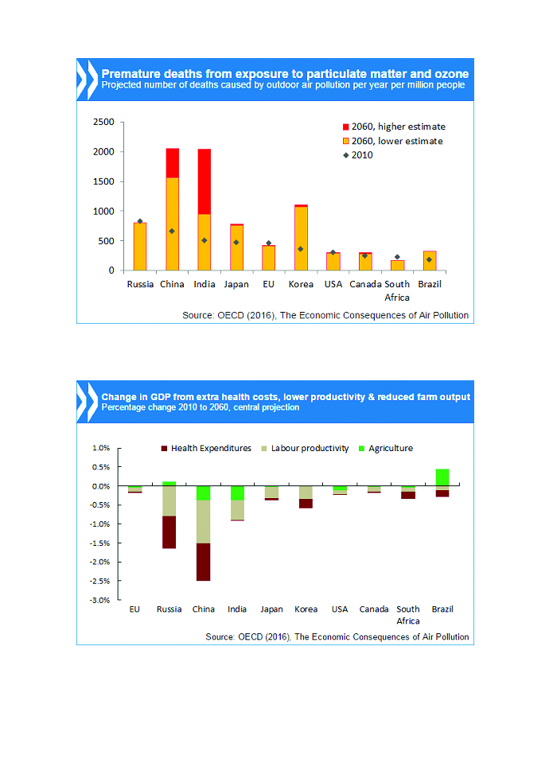
Fig. 110 איור 11.10: מגמות של מקרי מוות ונזקים כלכליים בארצות שונות עקב זיהום אוויר (PM ואוזון), 2010 לעומת 2060.#
מקור – https://web-archive.oecd.org/2017-01-04/405314-air-pollution-to-cause-6-9-million-premature-deaths-and-cost-1-gdp-by-2060.htm ; © Organisation for Economic Co-operation and Development; Reprinted with permission.
השפעת מזהמי אוויר על האקלים#
לחלק ממזהמי האטמוספרה, כגון PM, גופרית, אוזון, תרכובות חנקן, ו-VOC, יש השפעה ניכרת על האקלים.[196] מתוכם, ל-PM מיוחסת ההשפעה הגדולה ביותר לצד אי-הוודאות הגדולה ביותר.[197] ההשפעה של PM נובעת הן מתכונות פיזור ובליעת קרינה של החלקיקים עצמם (השפעה ישירה) והן מהעובדה שהם יכולים לשמש כגלעיני התעבות לעננים וכך להשפיע על התכונות האופטיות של עננים (השפעה עקיפה). קיים הרבה מידע על השפעת חלקיקים על מאזן הקרינה של כדור הארץ,[198] וממנו עולה שאין להתייחס לכל סוגי ה-PM כמקשה אחת. לדוגמא חלקיקים המכילים סולפט לעומת חלקיקי חומר אורגני שאריתי (פיח – black carbon - BC) ששניהם נפלטים בזמן שריפת דלקים פוסיליים. חלקיקי פיח (BC)[199] על פי רוב תורמים להתחממות, וסילוקם יועיל למאבק בהתחממות גלובלית.[200] לעומת זאת, חלקיקי סולפט, וכןABC (atmospheric brown clouds) גורמים לירידה בטמפרטורה של פני השטח, ולכן סילוקם הנדרש מסיבות בריאותיות, יגרום להתחממות פני השטח בתנאים מסוימים.[201] ייתכן שההשפעה תהיה מתונה עבור ABC, כיוון שהם אמנם מורידים את טמפרטורת פני השטח, אולם במקביל הם גורמים להתחממות האטמוספרה. במילים אחרות, יש הטוענים שהמגמה של שיפור באיכות אוויר, ובעיקר הפחתה בפליטות חלקיקים מפזרי קרינה כגון סולפטים, גורמת להאצה בהתחממות כדור הארץ עקב העלייה הנמשכת בריכוזי גזי החממה.[202] אחת המסקנות המתבקשות מטענה זו היא שהמשך סילוק PM מהאטמוספרה מחייב הגברת קצב סילוק גזי חממה, על מנת להימנע מהאצת ההתחממות הגלובלית.[203] ישנם גם מחקרים המצביעים על כך שבמודלים הקלאסיים של אקלים ישנה התעלמות מהמקטע הגס יחסית של חלקיקים אטמוספריים (חלקיקים הגדולים מ-5 מיקרומטר, בעיקר אבק מדברי), שגם הם תורמים להתחממות.[204] לכן, הפחתת הפליטות שלהם על ידי עצירת תהליכי מדבור (ראו פרק 8) תעזור בצורה נוספת למאבק בהתחממות גלובלית.
בעשורים האחרונים התפרסמו לא מעט מחקרים המצביעים על כך שישנה אי-וודאות גדולה לגבי תרומתם העקיפה של חלקיקים אטמוספריים למאזן הקרינה באמצעות השפעתם על תהליכי יצירת עננים, על גודל טיפות הענן ועל אורך החיים שלו. השפעת PM על טמפרטורה ויצירת משקעים (גשם ושלג) באזורים שונים סוכמה לאחרונה והיא מופיעה באיור 11.11. לעיתים חלקיקים מגבירים את יכולת ההמטרה של הענן, מסייעים ביצירת טיפות גדולות (הבולעות יותר קרינת שמש) ומקצרים את תוחלת חייו, ולעיתים הם עושים את ההיפך. טווח השפעה רחב זה הוא פועל יוצא של תנאי אטמוספרה שונים: (1) אטמוספרה נקייה יחסית מ-PM, כמו מעל האוקיינוס, או אטמוספרה עמוסה ב-PM, כמו באזורים עירוניים מזוהמים; (2) הרכב החלקיקים, גודלם, מידת ההידרופיליות שלהם ועוד.[205] יש מחקרים המצביעים על כך שמקור חשוב לאי-הוודאות הזאת קשור דווקא לפליטות של חלקיקים ממקורות טבעיים כמו אפר וולקני, חלקיקים הנוצרים מ-VOC ונפלטים מצמחייה, שריפות, קצף גלים ופליטות DMS מאוקיינוסים.[206] במהלך השנים נעשו מחקרים רבים שהתחקו אחר השפעת עשן אוניות על תכונות עננים ימיים[207] זאת על מנת לכמת את ההשפעה של PM על תכונות עננים באטמוספרה נקייה, ואכן יש מאמרים המצביעים על הבדלים מהותיים בתגובת האטמוספרה הימית והיבשתית לתוספת PM.[208]
{kind=link}
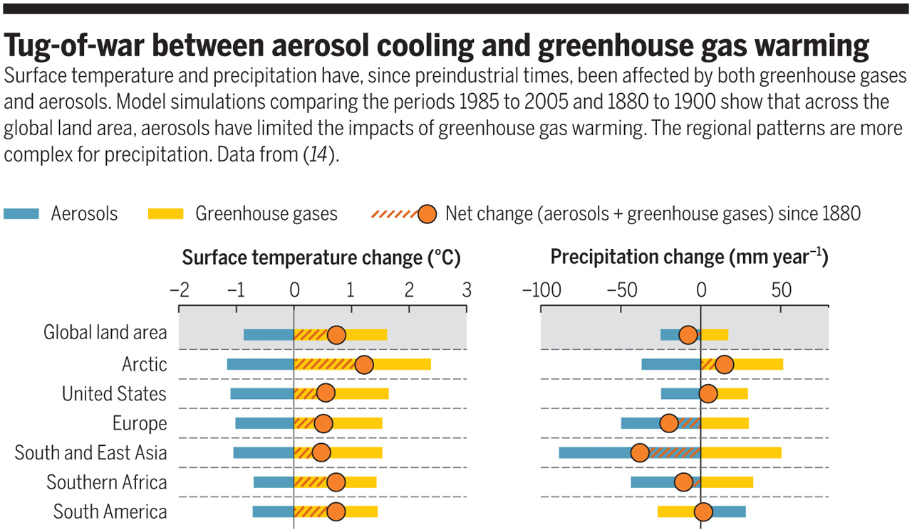
Fig. 111 איור 11.11: השפעת גזי חממה ו-PM על שינויי טמפרטורה (משמאל) וכמות משקעים (מימין) באזורים שונים בכדור הארץ בין התקופה 1985-2005 לעומת 1880-1900.#
מקור – Samset, B. H. (2018) https://doi.org/doi:10.1126/science.aat1723 ; Reprinted with permission from AAAS.
זיהום חוצה גבולות#
מאז עבודותיהם פורצות הדרך של פטרסון (Patterson) ושותפיו בשנות השישים הסתבר שמזהמי אוויר מגיעים לפינות הנידחות ביותר של כדור הארץ.[209] במשך הזמן הסתבר שזיהום חוצה גבולות משפיע על איכות האוויר גם באזורים פחות נידחים ופחות נקיים, כלומר שניתן להבחין בין מזהמים מקומיים למזהמים זרים. כך למשל דווח בארה“ב,[210] ביפן,[211] בדרום-מזרח אסיה,[212] במזרח התיכון[213] ובכל אגן הים התיכון ואירופה[214] שמזהמים ממקורות מרוחקים מתווספים לזיהום האויר המקומי. בחלק מהמחקרים נעשה ניסיון לקשור בין פליטות של מזהמים ראשוניים (\(NO_X\)) באזור המקור, עם ריכוזים גבוהים של מזהמים שניוניים (אוזון) באזור המטרה.[215] איור 11.12 מצביע על כיווני התנועה של מזהמים מאירופה, החל באזור הים השחור וכלה בספרד, אל מזרח התיכון וצפון אפריקה.
ישנם דיווחים בספרות שמזהמי אוויר כמו תרכובות אורגניות (למשל, PAH) [216] ומתכות רעילות (למשל, עופרת) נספחות לחלקיקי אבק המגיעים מאזור המדבריות ומגבירים את הרעילות של החלקיקים הטבעיים.[217] אחת הדרכים לבחון את מידת הסכנה הבריאותית של PM היא להשתמש במדד ”מקדם העשרה“ (EF – Enrichment Factor)[218] עבור מזהמים ידועים, בעיקר מתכות רעילות. בעזרת מדד זה ניתן היה להראות שלעיתים גם אבק מדברי שרובו הגיע מלב המדבר, נושא אתו זיהום, הן אירוסולים עשירי מתכות שנספחו על פני גרגרי האבק המדברי והן גרגרי אבק שמקורם בקרקעות מזוהמות שרוח המדבר הרחיפה בדרכה מהמדבר אל אזור המדידה.[219]
{kind=link}
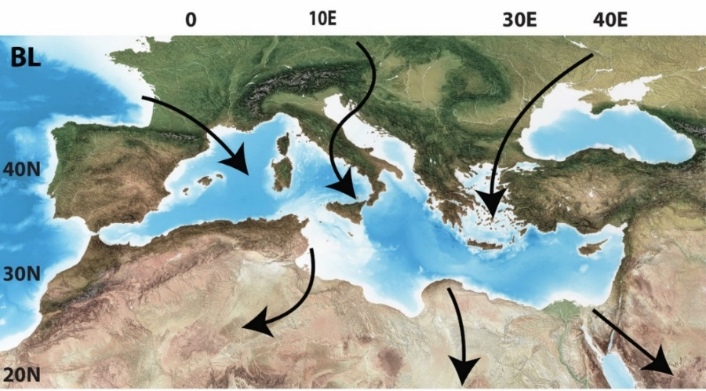
Fig. 112 איור 11.12: כיווני התנועה של זיהום חוצה גבולות באגן הים התיכון בשכבת הגבול של האטמוספרה. על פי – Lelieveld et al. (2002) https://doi.org/10.1038/nature15371#
שיטות דגימה וניטור של מזהמי אוויר#
על מנת לעקוב אחר מזהמים ולקבוע את ריכוזם באטמוספרה משתמשים כיום במגוון גדול של שיטות דגימה, ניטור ומדידה. יש אפשרות לבצע דיגום פאסיבי של אוויר בעזרת לכידת מזהמים השוקעים על מצע ללא שאיבה, וניתן לבצע דיגום אקטיבי, כאשר אוויר נשאב בקצב ידוע. האוויר חולף דרך דוגמים והמזהמים נאספים בדוגם (למשל מסנן). לעיתים משתמשים בדגימות רגעיות או קצרות מועד שנמשכות בין שניות לשעות בודדות (high-resolution sampling),[220] על פי רוב עם דיגום אקטיבי. במקרים אחרים מבצעים דגימות אינטגרטיביות במשך זמן רב של שבועות עד שנים,[221] המתבססות על דיגום פאסיבי או על שאיבה בקצב נמוך. בשנים האחרונות נעשה שימוש תכוף בחישה מרחוק, לעיתים תוך שילוב שיטות של למידת מכונה לצורך ניתוח נתונים.[222] שיטות המדידה של מזהמים משתפרות בעקביות, הן מבחינת רגישותן (היכולת למדוד גם ריכוזים נמוכים), והן מבחינת היכולת לסווג את המזהם לתת-סוגים, וכך להבין טוב יותר את מהלך חייו באטמוספרה ולנבא את הנזקים שהוא עלול לגרום.[223] השיטות החדשות מתמודדות עם נושא הדיגום והמדידה משני כיוונים עיקריים והפוכים: 1) שימוש במכשור מתוחכם ויקר המסוגל למדוד ריכוזים, מופעים כימיים, יחסים איזוטופיים של יסודות כימיים וכן תרכובות אורגניות ספציפיות באמצעות שיטות שונות של מס-ספקטרומטריה ומיקרוסקופיה ו-2) שימוש רב בגלאים פשוטים יחסית המאפשרים דיגום צפוף במרחב ובזמן[224] או דיגום ברמה האישית, המנטר (monitor) את הזיהום אליו נחשף אדם במהלך היממה.[225] כמו כן, נעשה שימוש הולך וגובר בלמידת-מכונה לצורך עיבוד הנתונים גם בשיטות שאינן מבוססות על חישה מרחוק. בגלל העניין הסביבתי הרב, חדשות לבקרים מתפרסמים מאמרים המתארים שיטות דגימה ואנליזה של מזהמים המנסים לדלות מידע רב ככל שניתן לגבי הרכבם הכימי ותכונותיהם האופטיות והבריאותיות,[226] גם באזורים נידחים יחסית.[227]
במסגרת שיפור שיטות הדגימה והמדידה של מזהמי אוויר, התפרסמו בעשורים האחרונים מאמרים רבים שהצליחו לאפיין את מקורותיהם של מזהמי האוויר באמצעות שילוב מודלים של הסעה אטמוספרית עם שיטות מתקדמות של אנליזת חומרים אורגניים (VOC ו-PM), יונים (סולפט, ניטרט ואמוניה), מתכות (בעיקר ב-PM וכספית בפאזה הגזית),[228] איזוטופים של מתכות (עופרת, כספית) וכן איזוטופים של יסודות אחרים (בעיקר חנקן, גופרית, חמצן, פחמן ומימן).[229] המידע שנאסף מצביע על שינויים שעתיים, יומיים ועונתיים בתרומה היחסית של מנועי שריפה פנימית, מפעלי תעשייה, שריפת ביו-דלקים, הרחפה של קרקעות עקב עבודות פיתוח, חקלאות וסופות אבק. כל המחקרים הללו התבססו על דיגום לפרקי זמן קצרים על מנת להימנע מערבוב של מזהמים המגיעים ממקורות שונים כאשר כיוון הרוחות משתנה.[230] לאור כל ההתפתחויות בתחום הניטור והניתוח, נעשים בשנים האחרונות מאמצים גדולים לשפר את היכולת לחזות מראש אירועי זיהום אוויר.[231] המאמצים משלבים מדידות ריכוזים רציפות, שיטות מידול מתקדמות עם תחזיות של מצבים סינופטיים והבנה של התגובות הכימיות בהם משתתפים מזהמי האוויר השונים.
החור באוזון - הידלדלות האוזון הסטרטוספרי#
נסיים בדיון קצר על הידלדלות האוזון הסטרטוספרי[232] עקב פליטות מזהמים מעשה ידי אדם (גזי ה-CFC שהם גם גזי חממה יעילים)[233] ובדרכי ההתמודדות עם בעיה זו ברמה המדעית וברמה הפוליטית והכלכלית (איור 11.13).[234] להידלדלות האוזון הסטרטוספרי יש את כל המרכיבים של אירוע סביבתי מכונן. הוא התחיל ב-1974 כאשר מחקר של מולינה ורולנד (Rowland & Molina) חזה את המנגנון באמצעותו תרכובות CFC מחישות את קצב הפירוק של אוזון סטרטוספרי.[235] מחקר זה זיכה אותם בפרס נובל. ב-1985, כעשור לאחר פרסום המחקר של מולינה ורולנד, תועדה מעל אנטארקטיקה ירידה בריכוזי אוזון סטרטוספרי. התיעוד הראשון נעשה באמצעות גלאים קרקעיים,[236] ואחר כך (לאחר תיקוני שגיאות)[237] באמצעות הדמאות לווין.[238] בעקבות תגלית זאת, התפרסמו סדרת מחקרים שתרמו להבנת התהליכים המטרולוגיים והתהליכים מושרי-אור באטמוספרה, בגללם האוזון מעל אנטארקטיקה הוא זה שנפגע בצורה החמורה והמהירה ביותר.[239] לאור הממצאים הללו, התאגדו כמעט כל מדינות העולם כדי להפסיק את השימוש בתרכובות CFC וכדי למצוא להן תחליפים (אמנת מונטריאול – ראו למטה).
שכבת האוזון בסטרטוספרה מכילה כ-90% מכלל האוזון (\(O_{3}\)) הנמצא באטמוספרה, כאשר ה-10% הנותרים נמצאים בטרופוספרה ומשתתפים בתהליכים בהם דנו קודם. קרינת השמש כוללת מגוון של אורכי גל[240] ביניהם קרינה אולטרה-סגולה (UV – ultraviolet radiation). קרינת ה-UV (בין אורכי גל של 0.1 עד 0.4 מיקרומטר) מחולקת לפי אורך גל לשלושה סוגים: \(UV_A\), \(UV_B\), \(UV_C\). קרינת \(UV_C\) היא בעלת אורך הגל הקצר ביותר, ולכן היא גם ההרסנית ביותר לתא החי (גורמת לנזקים ל-DNA ולסרטן). \(UV_C\) נבלע בסטרטוספרה על ידי מולקולות חמצן (\(O_2\)) בתהליך המייצר אוזון (\(O_{3}\)). קרינת \(UV_B\) שגם היא מזיקה מבחינה בריאותית, נבלעת ברובה על ידי אוזון סטרטוספרי וגורמת לפירוקו, תוך כדי שאוזון נוצר במקביל מבליעת \(UV_C\). \(UV_A\), קרינת ה-UV הפחות מזיקה, מצליחה לחדור את האטמוספרה ומגיעה לפני השטח של כדור הארץ. \(UV_A\) ו-\(UV_B\) משתתפים בתהליכים של יצירת וויטמין D בגוף החי,[241] ביצור הורמונים בצמחים, בשיזוף ובקביעת השעון הביולוגי.[242]
התהליכים הכימיים והפיזיקליים היוצרים את מחזור החיים של האוזון הסטרטוספרי והמופיעים למטה מסוכמים במאמר שהתפרסם בשנת 2014.[243] עוד לפני התגלית של מולינה ורולנד היה ידוע שאטומי כלור המגיעים לסטרטוספרה משתתפים בפירוק אוזון סטרטוספרי בתהליך המצריך קרינת UV (Process 1):
Process 1:
Cl + \(O_3\) → ClO + \(O_2\)
ClO + O → Cl + \(O_2\)
\(O_3\) + \(h\nu_{UVB}\) → \(O_2\) + O; where \(h\nu_{UVB}\) = \(UV_B\) light
———————————
Net: 2\(O_3\) + \(h\nu_{UVB}\) → 3\(O_2\)
בעוד שתהליכים אלו מתרחשים בסטרטוספרה על פני כל כדה“א, באזורי הקטבים מתפתחים תנאים ייחודיים המגבירים את יעילות וקצב הפירוק של אוזון בתחילת עונת האביב וגורמים לירידה בריכוזו למשך מספר חודשים – תופעה שזכתה בשם ”החור“ באוזון הסטרטוספרי. ישנם מספר תנאים מקדימים המגבירים את פירוק האוזון מעל אנטארקטיקה. ראשית, הסטרטוספרה מעל אנטארקטיקה מופרדת יחסית מהרחבים הנמוכים בגלל תופעה הידועה כ“וורטקס“ של אזור הקוטב.[244] שנית, בסטרטוספרה מעל אנטארקטיקה ובמידה פחותה בהרבה בקוטב הצפוני, יש תהליך נוסף התורם אטומי כלור. עקב הקור העז מתפתחים בחורף ענני קרח עשירי ניטרט ו/או סולפט (Polar Stratospheric Clouds - PSCs). על פני השטח של חלקיקי הקרח מתרחשות ראקציות המסבות תרכובות כימיות יציבות יחסית (לדוגמה, כלור-ניטרט (\(ClONO_2\)) שמקורו בתרכובות CFC) לתרכובות שבבוא האביב עם החשיפה לאור משחררות אטומי כלור:
\(ClONO_2\) + HCl →~PSC~→ \(Cl_2\) + \(HNO_3\) (takes place in the dark during the long winter-night)
\(Cl_2\) + \(h\nu_{vis}\) → 2Cl (needs visible light, the more energetic UV light is not essential)
אטומי כלור נוצרים בתחילת האביב כאשר מגיע האור הראשון, והם משתתפים בשני תהליכים המפורטים להלן, בהם אור נראה הוא מספיק אנרגטי כדי לפרק אוזון.
Process 2a:
ClO + ClO + M → \(Cl_2O_2\) + M (M - particle surfaces provided by the ice crystals in the PSC)
\(Cl_2O_2\) + \(h\nu_{vis}\) → Cl + \(ClO_2\)
\(ClO_2\) + M → Cl + \(O_2\) + M
2 [Cl + \(O_3\) → ClO + \(O_2\)]
—————————————
Net: 2\(O_3\) + \(h\nu_{vis}\) → 3\(O_2\)
Process 2b:
Br + \(O_3\) → BrO + \(O_2\) (Br arrives from the extensive use of methyl bromide (\(CH_3Br\)) as pesticide in agriculture)
Cl + \(O_3\) → ClO + \(O_2\)
BrO + ClO → BrCl + \(O_2\)
BrCl + \(h\nu_{vis}\) → Cl + Br
————————–
Net: 2\(O_3\) + \(h\nu_{vis}\) → 3\(O_2\)
במקביל, מתרחשות ראקציות איטיות יותר שצורכות את ה-Cl ומורידות את ריכוזו באטמוספרה וכן את יכולתו לפרק אוזון. הן מתחילות לבוא לידי ביטוי כמה שבועות אחרי תחילת האביב, כשריכוז האוזון יורד משמעותית.
Cl + \(CH_4\) → HCl + \(CH_3\)
בנוסף, בהמשך האביב-קיץ יש החלשות של ה“וורטקס“ של אנטארקטיקה ומתאפשר ערבול עם אוויר עשיר יותר באוזון המגיע מקווי רוחב נמוכים יותר.
לאור הממצאים החמורים שעלו מהדמאות לווין בשנות השמונים של המאה ה-20, נחתמה אמנת מונטריאול בשנת 1987,[245] והיא נכנסה לתוקף בראשית 1989. מאז, נחתמו שורה של תיקונים והוספו מספר חומרים לרשימה המקורית. כיוון של-CFC היו הרבה שימושים, חיפשו להם תחליפים שאינם פוגעים באוזון. תחליפי CFC העיקריים (HCFC) הם גזי חממה בעייתיים וגם להם מחפשים כיום תחליף.[246] בהמשך, גופים מסוימים ניסו להערים על ההסכמים הבינלאומיים ולהמשיך לייצר בסתר תרכובות CFC, אולם ניסיונות אלה אותרו ותועדו.[247] כמובן שהיו גם פרסומים של חוקרים (מעטים) שפקפקו בקישור שבין CFC והפגיעה באוזון הסטרטוספרי. הדיווחים האחרונים בספרות מצביעים על כך שהשחרור הפיראטי של חלק מתרכובות CFC נמצא בירידה,[248] עדות נוספת לחוזקם של הסכמים בינלאומיים. מצד שני, יש גם דיווחים עכשוויים על המשך פליטות של תרכובות CFC אחרות,[249] דבר שמצביע על הצורך בהמשך מעקב, תיעוד ואיתור מקורות פליטה.[250]
כפי שמופיע באיור 11.14, בעשורים האחרונים קצב ההידלדלות של האוזון הסטרטוספרי הואט, תועדה התייצבות והיו אפילו סימנים ראשוניים להתחלת הצטברות מחודשת של אוזון בסטרטוספרה מעל אנטארקטיקה[251] וירידה בריכוזים של תרכובות הורסות אוזון.[252] זאת למרות שלתרכובות CFC יש זמן חיים ארוך מאוד באטמוספרה (יותר מ-100 שנים לחלקן), כלומר שהריכוז שלהן באטמוספרה אמור לרדת באיטיות גם לאחר שהפליטות שלהן נפסקו. בנוסף, יש עדויות לכך ששריפות החורש והיער של 2020 באוסטרליה שחררו כמויות גדולות של כלור לאטמוספרה ופגעו במידה מסוימת באוזון הסטרטוספרי.[253] יש גם עדויות שהפגיעה באוזון הסטרטוספרי מעל אנטארקטיקה בשילוב עם התחממות גלובלית גרמו לשינוי בכיוון הרוחות המערביות (Westerly winds) בהמיספרה הדרומית, כאשר הפגיעה באוזון תרמה ליותר ממחצית מהשינוי.[254] בשורה התחתונה, הדיווח העדכני ביותר של WMO (World Meteorological Organization) מנבא שהחור באוזון מעל אנטארקטיקה יעלם בערך בעשור השביעי של המאה הזאת.[255] יש המגדירים את סיפור האוזון הסטרטוספרי כהצלחה סביבתית מרשימה שאמורה להוות דוגמה ומופת.[256]
לסיפור זה יש גם זווית מעניינת נוספת מאזור הקוטב הצפוני, שם התנאים להרס האוזון פחות רלוונטיים בהשוואה לאנטארקטיקה. יש מחקרים המייחסים חשיבות רבה לחלקם של גזי CFC בהתחממות האזור הארקטי,[257] ויש אף מאמרים הטוענים שבזכות הפסקת הפליטות של CFC, קצב ההתחממות של האזור הארקטי הואט במקצת (למרות שהוא עדיין מתחמם מהר) ולמרות היותם של תחליפי CFC (HCFC) גזי חממה.[258]
{kind=link}
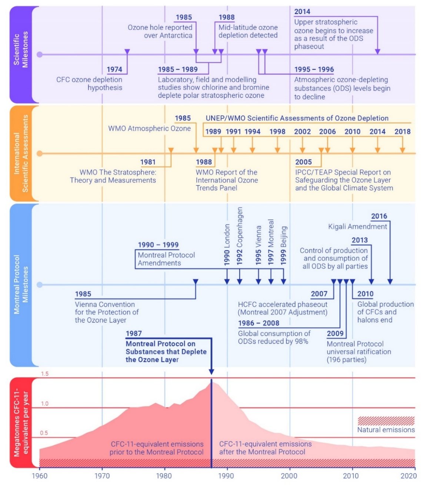
Fig. 113 איור 11.13: רצף האירועים העיקריים בגילוי, תיעוד והתמודדות עם הרס האוזון הסטרטוספרי.#
מקור – Making Peace with Nature: https://www.unep.org/resources/making-peace-nature; © 2024 UNEP; Reprinted with permission.
{kind=link}
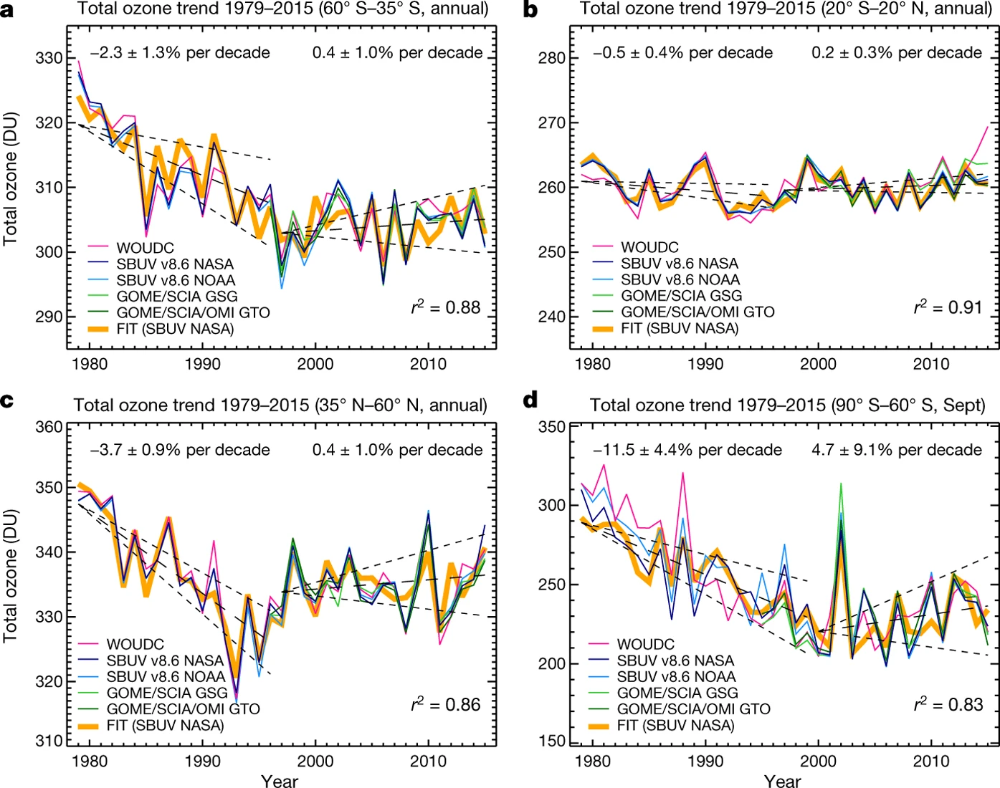
Fig. 114 איור 11.14: סדרת זמן של הכמות הכוללת של אוזון סטרטוספרי מעל (A) ההמיספרה הדרומית, שנתית; (B) האזור הטרופי, שנתית; (C) ההמיספרה הצפונית, שנתית; ו (D) אנטארקטיקה, בספטמבר.#
מקור – Chipperfield, M. S. et al. (2017) https://doi.org/10.1038/nature23681; Reprinted with permission from Nature.
סיכום#
זיהום האטמוספרה היא בעיה סביבתית ובריאותית אקוטית במרבית מדינות העולם.
ישנם מזהמים שיוצרים נזק בריאותי גם בריכוזים שבעבר נראו בטוחים (עופרת, חלקיקים מרחפים), מה שמחייב שינוי והתאמה של תקני חשיפה.
מידי פעם מתגלים סוגים חדשים של מזהמי אוויר שעד כה לא הייתה מודעות הן לנוכחותם והן לנזק לו הם גורמים (emerging contaminants).
מתגלים נזקים חדשים של מזהמים מוכרים, למשל PM - התפתחות המוח (אוטיזם, ציונים במבחנים, ירידה בקוגניציה) וכן שיבוש פעילות הורמונאלית.
ישנם מקרים בהם אבק מדברי שמגיע ממקורות טבעיים סופח במהלך דרכו באטמוספרה מתכות או תרכובות אורגניות רעילות.
התמודדות עם זיהום אוויר הינה מורכבת במיוחד בשל הפיזור המרחבי הלא-אחיד של מקורות הפליטה, וההיווצרות המתמדת של מזהמים מסוגים חדשים.[259]
למרות זאת, ישנם מספר עקרונות מנחים אותם יש ליישם. בראש ובראשונה יש להפסיק לשרוף דלקים פוסיליים הגורמים ככל הנראה ליותר מחמישה מיליון מקרי מוות בשנה.[260] בנוסף, יש למצוא פתרונות לזיהום אוויר המותאמים לכל אזור ואזור תוך התחשבות בתנאים האטמוספריים, הכלכליים והפוליטיים הייחודיים.
יש לעשות זאת תוך התבססות על שלושה מרכיבים: מתן תמריצים לשימוש בטכנולוגיות מפחיתות זיהום, עדכון מתמיד של הסטנדרטים של מזהמי אוויר ואכיפתם.
גילוי החור באוזון הסטרטוספרי מעל אנטארקטיקה הוא סיפור הצלחה מרשים ביותר מבחינת מדעי הסביבה המשלב עבודה תאורטית מבריקה המסבירה את מנגנון הפגיעה באוזון, מעקב אחר ריכוזי האוזון בעזרת מגוון גלאים והבנת זרימות האוויר האזוריות והשפעתן על תהליכי ההרס והבניה מחדש של האוזון הסטרטוספרי.
תגליות אלה הביאו לחתימה על הסכמים בינלאומיים להפסקת ייצור ושימוש בתרכובות CFC, ויישום ההסכמים בצורה גורפת.
נראה שהחור באוזון מעל אנטארקטיקה יעלם בערך בעשור השביעי של המאה הזאת. זאת למרות שמידי פעם מתגלים גופים הפולטים תרכובות CFC בצורה לא חוקית.